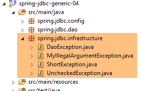
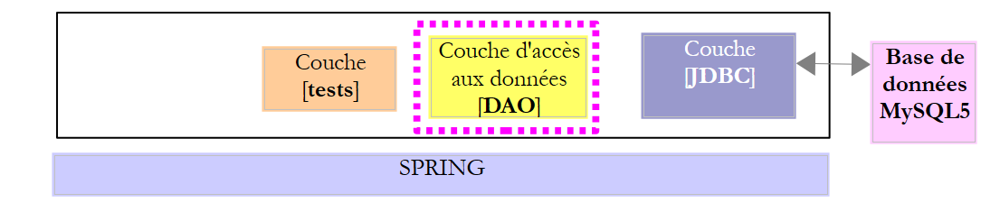
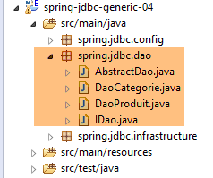
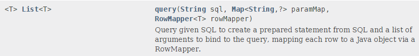
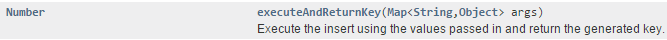
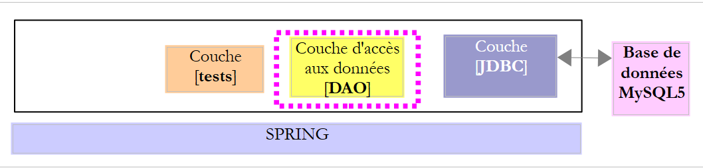
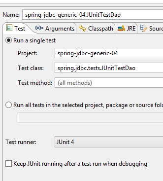

4. Introdução ao Spring JDBC
Neste capítulo, vamos estudar a seguinte arquitetura:
 |
Trata-se, portanto, da mesma arquitetura que anteriormente. Vamos introduzir duas alterações:
- a base de dados terá duas tabelas ligadas por uma relação de chave estrangeira;
- a camada [DAO] será implementada com a biblioteca [Spring JDBC], que facilita a gestão do API JDBC;
4.1. Configuração do ambiente de trabalho
Com o STS, importe o projeto [spring-jdbc-04] que se encontra na pasta [<exemples>/spring-database-generic/spring-jdbc]
 |
Além disso, é necessário criar uma nova base de dados MySQL com o cliente [MyManager] (ver parágrafo 3.1):
 |
- em [3]; os exemplos que se seguem utilizam uma base de dados MySQL denominada [dbproduitscategories];
 |
- em [9], introduza a palavra-passe do utilizador root (esta palavra-passe é root neste documento);
 |
 |
- em [18], a base de dados [dbproduitscategories] foi criada vazia. Criam-se tabelas e preenche-se a base de dados com um script SQL [19-20];
 |
- no [21], selecione a pasta [<exemples>/spring-database-config/mysql/databases];
 |
- em [25], certifique-se de que está na base [dbproduitscategories] e não na base [dbproduits];
- em [29], o script SQL criou cinco tabelas. As tabelas [ROLES, USERS, USERS_ROLES] só serão utilizadas quando abordarmos a segurança do serviço web criado para disponibilizar a base de dados [dbproduitscategories] na web;
4.2. A base de dados [dbproduitscategories]
A base de dados [dbproduitscategories] é uma extensão da base [dbproduits] analisada anteriormente. Enquanto na tabela [PRODUITS] o produto tinha uma categoria identificada por um número sem significado específico, aqui esse número será uma chave estrangeira na tabela [CATEGORIES].
A tabela [PRODUITS] é a seguinte:
 |
- [ID]: a chave primária autoincrementada da tabela [2];
- [NOM]: o nome único do produto [4];
- [PRIX]: o preço do produto;
- [DESCRIPTION]: a descrição do produto;
- [VERSIONING] é o número de versão do produto. A sua versão inicial é 1 [3]. Sempre que o produto for alterado, o seu número de versão será incrementado pelo código que explora a tabela;
- [CATEGORIE_ID]: a chave estrangeira na tabela [CATEGORIES] para indicar a categoria a que o produto pertence;
 |
- em [1-3], a chave estrangeira [CATEGORIE_ID] da tabela [PRODUITS]. Esta chave aponta para a coluna [ID] da tabela [CATEGORIES] [4-5];
- quando uma categoria é eliminada, todos os produtos a ela associados são igualmente eliminados ([6]). É importante referir este ponto, uma vez que é utilizado na construção da camada [DAO], que explora a base de dados [dbproduitscategories];
A tabela [CATEGORIES] das categorias é a seguinte:
 |
- [ID]: chave primária autoincrementada;
- [VERSIONING]: número de versão da categoria;
- [NOM]: nome único da categoria;
4.3. O projeto Eclipse
 |
O projeto [spring-jdbc-04] implementa a seguinte arquitetura:
 |
O projeto [spring-jdbc-04] é um projeto Maven configurado pelo seguinte ficheiro [pom.xml]:
 |
<?xml version="1.0" encoding="UTF-8"?>
<project xmlns="http://maven.apache.org/POM/4.0.0" xmlns:xsi="http://www.w3.org/2001/XMLSchema-instance"
xsi:schemaLocation="http://maven.apache.org/POM/4.0.0 http://maven.apache.org/xsd/maven-4.0.0.xsd">
<modelVersion>4.0.0</modelVersion>
<groupId>dvp.spring.database</groupId>
<artifactId>spring-jdbc-generic-04</artifactId>
<version>0.0.1-SNAPSHOT</version>
<packaging>jar</packaging>
<name>spring-jdbc-generic-04</name>
<description>Demo project for Spring JdbcTemplate</description>
<parent>
<groupId>org.springframework.boot</groupId>
<artifactId>spring-boot-starter-parent</artifactId>
<version>1.2.3.RELEASE</version>
<relativePath /> <!-- pesquisa do pai no repositório -->
</parent>
<properties>
<project.build.sourceEncoding>UTF-8</project.build.sourceEncoding>
<java.version>1.8</java.version>
</properties>
<dependencies>
<!-- configuração JDBC do SGBD -->
<dependency>
<groupId>dvp.spring.database</groupId>
<artifactId>generic-config-jdbc</artifactId>
<version>0.0.1-SNAPSHOT</version>
</dependency>
<!-- Spring JdbcTemplate -->
<dependency>
<groupId>org.springframework.boot</groupId>
<artifactId>spring-boot-starter-jdbc</artifactId>
</dependency>
</dependencies>
<build>
<plugins>
<plugin>
<groupId>org.apache.maven.plugins</groupId>
<artifactId>maven-surefire-plugin</artifactId>
<version>2.18.1</version>
</plugin>
</plugins>
</build>
</project>
- linhas 28-32: o projeto baseia-se no projeto [mysql-config-jdbc], que configura a camada JDBC;
- linhas 34-37: o artefacto [spring-boot-starter-jdbc] inclui as bibliotecas do Spring JDBC;
No final, as dependências são as seguintes:
 |
4.4. Configuração do Spring
 |
A classe [AppConfig] que configura o projeto Spring é a seguinte:
package spring.jdbc.config;
import generic.jdbc.config.ConfigJdbc;
import org.apache.tomcat.jdbc.pool.DataSource;
import org.springframework.context.annotation.Bean;
import org.springframework.context.annotation.ComponentScan;
import org.springframework.context.annotation.Configuration;
import org.springframework.context.annotation.Import;
import org.springframework.jdbc.core.namedparam.NamedParameterJdbcTemplate;
import org.springframework.jdbc.core.simple.SimpleJdbcInsert;
import org.springframework.jdbc.datasource.DataSourceTransactionManager;
import org.springframework.transaction.PlatformTransactionManager;
import org.springframework.transaction.annotation.EnableTransactionManagement;
@Configuration
@ComponentScan(basePackages = { "spring.jdbc.dao" })
@EnableTransactionManagement
@Import({ generic.jdbc.config.ConfigJdbc.class })
public class AppConfig {
// fonte de dados
@Bean
public DataSource dataSource() {
// fonte de dados TomcatJdbc
DataSource dataSource = new DataSource();
// configuração de acesso JDBC
dataSource.setDriverClassName(ConfigJdbc.DRIVER_CLASSNAME);
dataSource.setUsername(ConfigJdbc.USER_DBPRODUITSCATEGORIES);
dataSource.setPassword(ConfigJdbc.PASSWD_DBPRODUITSCATEGORIES);
dataSource.setUrl(ConfigJdbc.URL_DBPRODUITSCATEGORIES);
// ligações abertas inicialmente
dataSource.setInitialSize(5);
// resultado
return dataSource;
}
// Gestor de transações
@Bean
public PlatformTransactionManager transactionManager(DataSource dataSource) {
return new DataSourceTransactionManager(dataSource);
}
// JdbcTemplate
@Bean
public NamedParameterJdbcTemplate namedParameterJdbcTemplate(DataSource dataSource) {
return new NamedParameterJdbcTemplate(dataSource);
}
// inserção de produto
@Bean
public SimpleJdbcInsert simpleJdbcInsertProduit(DataSource dataSource) {
return new SimpleJdbcInsert(dataSource).withTableName(ConfigJdbc.TAB_PRODUITS).usingGeneratedKeyColumns(
ConfigJdbc.TAB_PRODUITS_ID);
}
// inserção de categoria
@Bean
public SimpleJdbcInsert simpleJdbcInsertCategorie(DataSource dataSource) {
return new SimpleJdbcInsert(dataSource).withTableName(ConfigJdbc.TAB_CATEGORIES).usingGeneratedKeyColumns(
ConfigJdbc.TAB_CATEGORIES_ID);
}
}
- linha 16: a classe é uma classe de configuração do Spring;
- linha 17: o pacote [spring.jdbc.dao] será analisado para procurar outros componentes Spring além dos presentes na classe [AppConfig]. Nele será encontrado o componente que implementa a camada [DAO];
- linha 18: não iremos gerir as transações nós próprios, mas sim deixá-las a cargo do Spring JDBC. A única coisa a fazer será anotar os métodos que devem ser executados numa transação com a anotação Spring [@Transactional]. A linha 18 garante que esta anotação será gerida e não ignorada. A gestão das transações é assegurada por uma das dependências do projeto Spring JDBC, importado pelo ficheiro [pom.xml];
- linha 19: importam-se os beans já definidos na classe [generic.jdbc.config.ConfigJdbc] do projeto [mysql-config-jdbc];
- linhas 23-36: a fonte de dados [tomcat-jdbc] introduzida no exemplo [spring-jdbc-02];
- linhas 40-42: o gestor de transações associado à fonte de dados definida anteriormente. O bean deve chamar-se obrigatoriamente [transactionManager], pois é esse o nome utilizado pela anotação [@EnableTransactionManagement]. O gestor [DataSourceTransactionManager] é fornecido pela biblioteca Spring JDBC (linha 12);
- linhas 45-48: o bean [namedParameterJdbcTemplate], no qual se baseará a implementação da camada [DAO]. Este bean é fornecido pela biblioteca Spring JDBC (linha 10). Este bean também está ligado à fonte de dados definida anteriormente (linha 47);
- linhas 51-55: o bean [simpleJdbcInsertProduit] (nome livre) será utilizado para inserir um produto na tabela [PRODUITS] e recuperar a chave primária gerada. Os vários parâmetros utilizados são os seguintes:
- [dataSource]: a fonte de dados [tomcat-jdbc] das linhas 24-36;
- [ConfigJdbc.TAB_PRODUITS]: a tabela [PRODUITS];
- [ConfigJdbc.TAB_CATEGORIES_ID]: a coluna-chave primária da tabela [PRODUITS]. Recorde-se que, para PostgreSQL, o nome desta coluna deverá estar em minúsculas;
- linhas 58-62: o bean [simpleJdbcInsertCategorie] será utilizado para inserir uma categoria na tabela [CATEGORIES] e recuperar a chave primária gerada;
4.5. As exceções do projeto
 |
Já vimos as classes [UncheckedException, DaoException, ShortException] no projeto [spring-jdbc-03]. Adicionamos uma nova:
package spring.jdbc.infrastructure;
public class MyIllegalArgumentException extends UncheckedException {
private static final long serialVersionUID = 1L;
// fabricantes
public MyIllegalArgumentException() {
super();
}
public MyIllegalArgumentException(int code, Throwable e, String className) {
super(code, e, className);
}
}
- A classe [MyIllegalArgumentException] deriva da classe [UncheckedException] e é, portanto, uma classe não controlada. Será utilizada para sinalizar uma chamada com argumentos incorretos de um método da camada [DAO]. Não lhe foi atribuído o nome [IllegalArgumentException] porque esta exceção já existe na classe JDK e isso levava, por vezes, o compilador a gerar uma classe [import] incorreta;
4.6. As entidades do projeto
 |
As classes do pacote [spring.jdbc.entities] correspondem às imagens das linhas das tabelas da base de dados [dbproduitscategories]. Por enquanto, ignoraremos as imagens das tabelas [USERS, ROLES, USERS_ROLE].
Todas as entidades herdam da classe pai [AbstractCoreEntity]:
package spring.jdbc.entities;
public abstract class AbstractCoreEntity {
// características
protected Long id;
protected Long version;
// construtores
public AbstractCoreEntity() {
}
public AbstractCoreEntity(Long id, Long version) {
this.id = id;
this.version = version;
}
public AbstractCoreEntity(AbstractCoreEntity entity) {
this.id = entity.id;
this.version = entity.version;
}
public void setAbstractCoreEntity(AbstractCoreEntity entity) {
this.id = entity.id;
this.version = entity.version;
}
// ------------------------------------------------------------
// redefinição de [equals] e [hashcode]
@Override
public int hashCode() {
return (id != null ? id.hashCode() : 0);
}
@Override
public boolean equals(Object entity) {
if (!(entity instanceof AbstractCoreEntity)) {
return false;
}
String class1 = this.getClass().getName();
String class2 = entity.getClass().getName();
if (!class2.equals(class1)) {
return false;
}
AbstractCoreEntity other = (AbstractCoreEntity) entity;
return id != null && other.id != null && id.equals(other.id);
}
// getters e setters
...
}
- linha 5: o campo [id] será associado à coluna [ID], chave primária das tabelas;
- linha 6: o campo [version] será associado à coluna [VERSIONING] das tabelas;
- linhas 8-26: vários construtores e métodos para criar ou inicializar um objeto [AbstractCoreEntity];
- linhas 35-47: o método [equals] determina que dois objetos [AbstractCoreEntity] são iguais se tiverem o mesmo campo [id]. É importante recordar aqui que os objetos [AbstractCoreEntity] serão representações de linhas de tabelas em que [id] é a chave primária e, por conseguinte, não podem existir duas linhas com o mesmo [id];
- linhas 30-33: uma proposta de [hashCode];
A classe [Produit] corresponderá a uma linha da tabela [PRODUITS]:
package spring.jdbc.entities;
import com.fasterxml.jackson.annotation.JsonFilter;
@JsonFilter("jsonFilterProduit")
public class Produit extends AbstractCoreEntity {
// propriedades
private String nom;
private Long idCategorie;
private double prix;
private String description;
private Categorie categorie;
// construtores
public Produit() {
}
public Produit(Long id, Long version, String nom, Long idCategorie, double prix, String description,
Categorie categorie) {
super(id, version);
this.nom = nom;
this.idCategorie = idCategorie;
this.prix = prix;
this.description = description;
this.categorie = categorie;
}
// assinatura
public String toString() {
return String.format("[id=%s, version=%s, nom=%s, prix=10.2f, desc=%s, idCategorie=%s]", id, version, nom, prix,
description, idCategorie);
}
// getters e setters
...
}
- linha 6: a classe [Produit] estende a classe [AbstractCoreEntity];
- linhas 8-12: os campos [id, version, nom, idCategorie, prix, description] são as imagens das colunas [ID, VERSIONING, NOM, CATEGORIE_ID, PRIX, DESCRIPTION] da tabela [PRODUITS];
- linha 12: o objeto do tipo [Categorie] com a chave primária [idCategorie]. Este campo poderá ou não ser preenchido, consoante o caso. Quando estiver preenchido, referir-se-á ao produto na versão longa [LongProduit]; caso contrário, ao produto na versão curta [ShortProduit];
- linha 5: um filtro jSON. Recorde-se que o projeto [mysql-config-jdbc] inclui uma biblioteca jSON. A necessidade do filtro decorre do facto de o campo [categorie] poder ou não ser preenchido. Neste caso, a representação jSON do produto difere. Para gerir estes dois casos, configuraremos o filtro [jsonFilterProduit] na linha 5. Um filtro jSON permite especificar, de forma dinâmica, os campos a excluir da representação jSON. Quando se verificar que o campo [categorie] não foi preenchido, este será excluído da representação jSON do produto;
A classe [Categorie] é a representação de uma linha da tabela [CATEGORIES]:
package spring.jdbc.entities;
import java.util.ArrayList;
import java.util.List;
import com.fasterxml.jackson.annotation.JsonFilter;
@JsonFilter("jsonFilterCategorie")
public class Categorie extends AbstractCoreEntity {
// propriedades
private String nom;
public List<Produit> produits;
// construtores
public Categorie() {
}
public Categorie(Long id, Long version, String nom, List<Produit> produits) {
super(id, version);
this.nom = nom;
this.produits = produits;
}
// assinatura
public String toString() {
return String.format("[id=%s, version=%s, nom=%s]", id, version, nom);
}
// métodos
public void addProduit(Produit produit) {
// adição de um produto
if (produits == null) {
produits = new ArrayList<Produit>();
}
if (produit != null) {
// adiciona-se o produto
produits.add(produit);
// define-se a sua categoria
produit.setCategorie(this);
produit.setIdCategorie(this.id);
}
}
// getters e setters
...
}
- linha 9: a classe [Categorie] estende a classe [AbstractCoreEntity];
- linha 12: os campos [id, version, nom] são as imagens das colunas [ID, VERSIONING, NOM] da tabela [CATEGORIES];
- linha 13: o campo [produits] representa a lista de produtos da categoria. Este campo nem sempre está preenchido. Quando não está, fala-se de categoria versão curta [ShortCategorie]; caso contrário, de categoria versão longa [LongCategorie];
- linhas 32-44: o método [addProduit] permite adicionar um produto à categoria (linha 39) e definir, no produto adicionado, as características da sua categoria (idCategorie e categoria);
- linha 8: um filtro jSON. Quando a biblioteca jSON tiver de serializar/deserializar um objeto [Categorie], será necessário indicar-lhe como gerir o filtro denominado [jsonFilterCategorie];
4.7. A interface Idao<T>
 |
 |
A interface [IDao] da camada [DAO] tem a seguinte assinatura:
package spring.jdbc.dao;
import java.util.List;
import spring.jdbc.entities.AbstractCoreEntity;
public interface IDao<T extends AbstractCoreEntity> {
// lista de todas as entidades T
public List<T> getAllShortEntities();
public List<T> getAllLongEntities();
// de entidades específicas - versão curta
public List<T> getShortEntitiesById(Iterable<Long> ids);
public List<T> getShortEntitiesById(Long... ids);
public List<T> getShortEntitiesByName(Iterable<String> names);
public List<T> getShortEntitiesByName(String... names);
// de entidades específicas - versão longa
public List<T> getLongEntitiesById(Iterable<Long> ids);
public List<T> getLongEntitiesById(Long... ids);
public List<T> getLongEntitiesByName(Iterable<String> names);
public List<T> getLongEntitiesByName(String... names);
// atualização de várias entidades
public List<T> saveEntities(Iterable<T> entities);
public List<T> saveEntities(@SuppressWarnings("unchecked") T... entities);
// eliminação de todas as entidades
public void deleteAllEntities();
// eliminação de várias entidades
public void deleteEntitiesById(Iterable<Long> ids);
public void deleteEntitiesById(Long... ids);
public void deleteEntitiesByName(Iterable<String> names);
public void deleteEntitiesByName(String... names);
public void deleteEntitiesByEntity(Iterable<T> entities);
public void deleteEntitiesByEntity(@SuppressWarnings("unchecked") T... entities);
}
- linha 7: temos aqui uma interface [IDao] parametrizada por um tipo T com uma condição: este tipo deve estender a classe [AbstractCoreEntity] ou implementar a interface [AbstractCoreEntity]. A palavra-chave [extends] é utilizada em ambos os casos. Aqui, T será instanciado quer pelo tipo [Produit], quer pelo tipo [Categorie]. De facto, percebe-se rapidamente que se realizam o mesmo tipo de operações (inserção, modificação, eliminação, seleção) nos tipos [Produit] e [Categorie]. Parece, então, lógico agrupar estes métodos numa interface genérica;
- dependendo do caso, os termos [LongEntity] e [ShortEntity] referem-se a situações diferentes:
- quando T é do tipo [Produit]:
- [ShortEntity] é o produto sem o seu campo [Categorie categorie] preenchido;
- [LongEntity] é o produto com o campo [Categorie categorie] preenchido;
- quando T é do tipo [Categorie]:
- [ShortEntity] é a categoria sem o campo [List<Produit> produits] preenchido;
- [LongEntity] é o produto com o campo [List<Produit> produits] preenchido;
- quando T é do tipo [Produit]:
Temos, portanto, uma interface com 19 métodos. A maioria dos métodos existe em duplicado. Tomemos como exemplo o método [getShortEntitiesById]:
public List<T> getShortEntitiesById(Iterable<Long> ids);
public List<T> getShortEntitiesById(Long... ids);
- linhas 1 e 3: o parâmetro é a lista das chaves primárias das entidades cuja versão curta se pretende obter. Esta lista é apresentada de duas formas diferentes:
- linha 1: uma lista que implementa a interface [Iterable<Long>]. O tipo [List<Long>] implementa esta interface, mas existem muitos outros. Se tivéssemos indicado [List<Long> ids], isso teria sido suficiente para os nossos exemplos, mas obrigaríamos o utilizador dos nossos exemplos a efetuar conversões caso o seu parâmetro não fosse do tipo exato esperado;
- linha 3: infelizmente, o tipo Long[] não implementa a interface [Iterable<Long>]. Neste caso, utilizaremos a versão da linha 3. O parâmetro formal [Long... ids] (3 pontos) pode receber o valor tanto de um array como de uma sequência de IDs: getShortEntitiesById(id1, id2, ...);
É esta mesma interface IDao<T> que será implementada pela seguinte arquitetura:
 |
onde uma camada [JPA] (Java Persistence API) será inserida entre a camada [DAO] e o controlador JDBC do SGBD. Isto permitir-nos-á dispor de uma camada de testes comum às duas arquiteturas. Em ambos os casos, a camada [DAO] apresentará duas interfaces:
- IDao<Produto> para aceder à tabela [PRODUITS];
- IDao<Categoria> para aceder à tabela [CATEGORIES];
4.8. Implementação da interface IDao<T>
- a interface IDao<Produto> é implementada pela classe [DaoProduit];
- a interface IDao<Categoria> é implementada pela classe [DaoCategorie];
As classes [DaoProduit] e [DaoCategorie] estendem ambas a classe abstrata [AbstractDao] e seguinte:
package spring.jdbc.dao;
import java.util.ArrayList;
import java.util.List;
import org.springframework.beans.factory.annotation.Autowired;
import org.springframework.beans.factory.annotation.Qualifier;
import org.springframework.transaction.annotation.Transactional;
import spring.jdbc.entities.AbstractCoreEntity;
import spring.jdbc.infrastructure.MyIllegalArgumentException;
import com.google.common.collect.Lists;
public abstract class AbstractDao<T extends AbstractCoreEntity> implements IDao<T> {
// injeções
@Autowired
@Qualifier("maxPreparedStatementParameters")
protected int maxPreparedStatementParameters;
// local
protected String simpleClassName = getClass().getSimpleName();
@Override
@Transactional(readOnly = true)
public List<T> getShortEntitiesById(Iterable<Long> ids) {
// validade do argumento
List<T> entities = checkNullOrEmptyArgument(true, ids);
if (entities != null) {
return entities;
}
// obtenção por parcelas
entities = new ArrayList<T>();
int taille = maxPreparedStatementParameters;
List<Long> listIds = Lists.newArrayList(ids);
int nbIds = listIds.size();
for (int i = 0; i < nbIds; i += taille) {
int limit = Math.min(nbIds, i + taille);
entities.addAll(getShortEntitiesById(listIds.subList(i, limit)));
}
// resultado
return entities;
}
@Override
@Transactional(readOnly = true)
public List<T> getShortEntitiesById(Long... ids) {
// validade do argumento
List<T> entities = checkNullOrEmptyArgument(true, ids);
if (entities != null) {
return entities;
}
// resultado
return getShortEntitiesById((Iterable<Long>) Lists.newArrayList(ids));
}
@Override
@Transactional(readOnly = true)
public List<T> getShortEntitiesByName(Iterable<String> names) {
...
}
@Override
@Transactional(readOnly = true)
public List<T> getShortEntitiesByName(String... names) {
...
}
@Override
@Transactional(readOnly = true)
public List<T> getLongEntitiesById(Iterable<Long> ids) {
...
}
@Override
@Transactional(readOnly = true)
public List<T> getLongEntitiesById(Long... ids) {
...
}
@Override
@Transactional(readOnly = true)
public List<T> getLongEntitiesByName(Iterable<String> names) {
...
}
@Override
@Transactional(readOnly = true)
public List<T> getLongEntitiesByName(String... names) {
...
}
@Override
@Transactional
public List<T> saveEntities(Iterable<T> entities) {
...
}
@Override
@Transactional
public List<T> saveEntities(@SuppressWarnings("unchecked") T... entities) {
...
}
@Override
public void deleteEntitiesById(Iterable<Long> ids) {
...
}
@Override
public void deleteEntitiesById(Long... ids) {
...
}
@Override
public void deleteEntitiesByName(Iterable<String> names) {
...
}
@Override
public void deleteEntitiesByName(String... names) {
...
}
@Override
public void deleteEntitiesByEntity(Iterable<T> entities) {
...
}
@Override
public void deleteEntitiesByEntity(@SuppressWarnings("unchecked") T... entities) {
...
}
protected void deleteEntitiesByEntity(List<T> entities) {
...
}
@Override
@Transactional(readOnly = true)
public abstract List<T> getAllShortEntities();
@Override
@Transactional(readOnly = true)
public abstract List<T> getAllLongEntities();
@Override
public abstract void deleteAllEntities();
// métodos privados ----------------------------------------------
private <T2> List<T> checkNullOrEmptyArgument(boolean checkEmpty, Iterable<T2> elements) {
...
}
@SuppressWarnings("unchecked")
private <T2> List<T> checkNullOrEmptyArgument(boolean checkEmpty, T2... elements) {
...
}
// métodos protegidos ----------------------------------------------
abstract protected List<T> getShortEntitiesById(List<Long> ids);
abstract protected List<T> getShortEntitiesByName(List<String> names);
abstract protected List<T> getLongEntitiesById(List<Long> ids);
abstract protected List<T> getLongEntitiesByName(List<String> names);
abstract protected List<T> saveEntities(List<T> entities);
abstract protected void deleteEntitiesById(List<Long> ids);
abstract protected void deleteEntitiesByName(List<String> names);
}
- linha 15: a classe [AbstractDao] é abstrata (palavra-chave «abstract»). Como tal, não pode ser instanciada. Só pode ser derivada. Esta classe tem várias funções:
- definir a natureza da transação em que cada método se desenrola;
- fazer o máximo possível de coisas em comum às duas implementações das interfaces [IDao<Produit>] e [IDao<Categorie>]. Trata-se principalmente de verificar a validade dos argumentos. Não serão aceites argumentos null, nem listas vazias;
- uniformizar o tipo dos parâmetros T... params e Iterable<T> params num único: List<T> params;
- delegar o trabalho às classes filhas assim que este se tornar específico de uma das duas interfaces;
Graças à uniformização dos parâmetros dos diferentes métodos efetuada pela classe [AbstractDao], as classes filhas [DaoProduit] e [DaoCategorie] terão apenas 10 métodos para implementar, em vez de 19:
// métodos implementados pelas classes filhas ----------------------------------------------
abstract protected List<T> getShortEntitiesById(List<Long> ids);
abstract protected List<T> getShortEntitiesByName(List<String> names);
abstract protected List<T> getLongEntitiesById(List<Long> ids);
abstract protected List<T> getLongEntitiesByName(List<String> names);
abstract protected List<T> saveEntities(List<T> entities);
abstract protected void deleteEntitiesById(List<Long> ids);
abstract protected void deleteEntitiesByName(List<String> names);
@Override
@Transactional(readOnly = true)
public abstract List<T> getAllShortEntities();
@Override
@Transactional(readOnly = true)
public abstract List<T> getAllLongEntities();
@Override
public abstract void deleteAllEntities();
Vejamos alguns métodos da classe [AbstractDao].
Método [getShortEntitiesById]
Este método destina-se a obter a versão curta de entidades cujas chaves primárias são fornecidas.
// injeções
@Autowired
@Qualifier("maxPreparedStatementParameters")
protected int maxPreparedStatementParameters;
// local
protected String simpleClassName = getClass().getSimpleName();
@Override
@Transactional(readOnly = true)
public List<T> getShortEntitiesById(Iterable<Long> ids) {
...
}
- linhas 2-4: insere-se o bean [maxPreparedStatementParameters] definido no ficheiro de configuração [ConfigJdbc], que configura a camada JDBC de um SGBD específico:
// número máximo de parâmetros de um [PreparedStatement]
public final static int MAX_PREPAREDSTATEMENT_PARAMETERS = 10000;
@Bean(name = "maxPreparedStatementParameters")
public int maxPreparedStatementParameters() {
return MAX_PREPAREDSTATEMENT_PARAMETERS;
}
- linhas 1-7: definem o bean [maxPreparedStatementParameters], que irá determinar o número máximo de parâmetros que se podem atribuir a um tipo [PreparedStatement]. Esta necessidade não surgiu com o SGBD MySQL, que aceitou 10 000 parâmetros para um tipo [PreparedStatement]. Durante os testes com o servidor SGBD e SQL, este lançou uma exceção indicando que o número máximo de parâmetros para um tipo [PreparedStatement] era de 2100. Por isso, este número passou a ser um parâmetro da configuração dos diferentes SGBD. Deve, portanto, ser incluído no projeto de configuração [sgbd-config-jdbc] de cada SGBD;
Voltemos ao código do método [getShortEntitiesById]:
// injeções
@Autowired
@Qualifier("maxPreparedStatementParameters")
protected int maxPreparedStatementParameters;
// local
protected String simpleClassName = getClass().getSimpleName();
@Override
@Transactional(readOnly = true)
public List<T> getShortEntitiesById(Iterable<Long> ids) {
...
}
- linha 7: o nome da classe. É utilizado como parâmetro de um dos construtores da classe de exceção [DaoException];
- linha 10: a anotação [@Transactional(readOnly = true)] indica que o método deve ser executado numa transação de leitura única. Pode questionar-se a utilidade de tal transação, na medida em que o método apenas efetua leituras e, portanto, em caso de falha, não há nada a anular. É o autor da biblioteca [Spring Data] que o aconselha e explica o motivo. Segui o seu conselho;
O corpo do método é o seguinte:
@Override
@Transactional(readOnly = true)
public List<T> getShortEntitiesById(Iterable<Long> ids) {
// validade do argumento
List<T> entities = checkNullOrEmptyArgument(true, ids);
if (entities != null) {
return entities;
}
...
}
- linha 5: a validade do parâmetro [ids] é verificada pelo método seguinte:
private <T2> List<T> checkNullOrEmptyArgument(boolean checkEmpty, Iterable<T2> elements) {
// elementos nulos?
if (elements == null) {
throw new MyIllegalArgumentException(222, new NullPointerException("L'argument ne peut être null"), simpleClassName);
}
// elementos vazios?
if (!elements.iterator().hasNext()) {
if (checkEmpty) {
throw new MyIllegalArgumentException(223, new RuntimeException("l'argument ne peut être une liste vide"),
simpleClassName);
} else {
return new ArrayList<T>();
}
}
// resultado por predefinição
return null;
}
- linha 1: o método [checkNullOrEmptyArgument] é um método genérico parametrizado pelo tipo <T2>. T2 é o tipo dos elementos passados como segundo parâmetro do método. Pode ser [Long, String, AbstractCoreEntity];
- linha 1: o método [checkNullOrEmptyArgument] aceita dois parâmetros:
- [Iterable<T2> elements]: o parâmetro a testar;
- [checkEmpty]: é verdadeiro se for necessário verificar se o parâmetro anterior é uma lista não vazia;
- linhas 4-6: verifica-se se o parâmetro [elements] não é null. Se não for esse o caso, é lançada uma exceção do tipo [MyIllegalArgumentException];
- linhas 8-15: se a lista estiver vazia e for necessário verificar se não está vazia, lança-se uma exceção do tipo [MyIllegalArgumentException];
- linha 13: se a lista estiver vazia e não for necessário verificar se ela não está vazia, então é devolvida uma lista vazia de elementos do tipo T. A interface [Iterable<T2>] possui um método [iterator()] que permite iterar sobre os elementos da lista que implementam a interface. Dois métodos deste iterador são úteis:
- [itérateur].hasNext(): retorna verdadeiro se a lista ainda tiver um elemento a ser processado, falso caso contrário;
- [iterateur].next(): devolve o elemento atual da lista e avança um elemento;
- por fim,
- se o argumento [T2... elements] for null ou estiver vazio, é lançada uma exceção do tipo [MyIllegalArgumentException];
- se o argumento [T2... elements] for uma lista vazia e tal for válido, então é devolvida uma lista vazia de elementos do tipo T;
Existe um método análogo quando o argumento a testar é do tipo [T2... elements]:
@SuppressWarnings("unchecked")
private <T2> List<T> checkNullOrEmptyArgument(boolean checkEmpty, T2... elements) {
...
}
Voltemos ao código do método [getShortEntitiesById]:
@Override
@Transactional(readOnly = true)
public List<T> getShortEntitiesById(Iterable<Long> ids) {
// validade do argumento
List<T> entities = checkNullOrEmptyArgument(true, ids);
// obtenção por parcelas
entities = new ArrayList<T>();
int taille = maxPreparedStatementParameters;
List<Long> listIds = Lists.newArrayList(ids);
int nbIds = listIds.size();
for (int i = 0; i < nbIds; i += taille) {
int limit = Math.min(nbIds, i + taille);
entities.addAll(getShortEntitiesById(listIds.subList(i, limit)));
}
// resultado
return entities;
}
- linha 7: se chegarmos aqui, significa que o argumento [Iterable<Long> ids] é válido;
- linhas 7-14: veremos mais adiante que o método [getShortEntitiesById] será implementado por um tipo [PreparedStatement], que terá como parâmetros a lista de chaves primárias a pesquisar. Por exemplo:
public final static String SELECT_SHORTCATEGORIE_BYID = "SELECT c.ID as c_ID, c.VERSIONING as c_VERSIONING, c.NOM as c_NOM FROM CATEGORIES c WHERE c.ID in (:ids)";
: ids é um parâmetro cujo valor efetivo será um tipo List<Long>. Cada elemento desta lista será objeto de um parâmetro ? num tipo [PreparedStatement]. Ora, já referimos que este tipo aceita um número máximo de parâmetros, número esse definido pelo campo [maxPreparedStatementParameters] da classe;
- linha 7: a lista de entidades T que será devolvida pelo método [getShortEntitiesById]. Esta lista será construída em blocos de [maxPreparedStatementParameters] elementos;
- linha 9: a partir do argumento [Iterable<Long> ids], cria-se um tipo [List<Long> listIds]. A classe [Lists] é uma classe da biblioteca Google Guava que oferece vários métodos estáticos para manipular coleções de objetos. A biblioteca Google Guava foi importada (pom.xml) pelo projeto Maven [mysql-config-jdbc]:
<!-- Google Guava -->
<dependency>
<groupId>com.google.guava</groupId>
<artifactId>guava</artifactId>
<version>16.0.1</version>
</dependency>
- linha 10: o número de entidades T a pesquisar na base de dados;
- linhas 11-13: são pesquisadas por grupos de [taille = maxPreparedStatementParameters] elementos;
- linha 12: um cálculo para evitar ultrapassar o fim da lista [listIds];
- linha 13: as entidades T são obtidas através da chamada [getShortEntitiesById(listIds.subList(i, limit))]. Este método é definido na classe por:
abstract protected List<T> getShortEntitiesById(List<Long> ids);
É, portanto, a classe filha que irá procurar as entidades T na base de dados:
- [DaoProduit] se T for do tipo [Produit];
- [DaoCategorie] se T for do tipo [Categorie];
O interesse deste trabalho da classe pai é duplo:
- a assinatura do método [getShortEntitiesById] na classe filha é única: o seu argumento é do tipo [List<Long> ids];
- a classe filha não tem de se preocupar com o problema dos parâmetros [maxPreparedStatementParameters] de um [PreparedStatement]. A sua classe pai tratou disso por ela;
- linha 13: as entidades recuperadas pela classe filha são acumuladas na lista de entidades que será devolvida pela classe pai (linha 16);
Agora, vejamos a implementação do outro método [getShortEntitiesById] da classe:
@Override
@Transactional(readOnly = true)
public List<T> getShortEntitiesById(Long... ids) {
// validade do argumento
List<T> entities = checkNullOrEmptyArgument(true, ids);
// resultado
return getShortEntitiesById((Iterable<Long>) Lists.newArrayList(ids));
}
- linha 3: a natureza do argumento mudou: Long... ids;
- linha 5: verifica-se a validade deste argumento;
- linha 7: é chamado o método [getShortEntitiesById] que acabámos de descrever. Mais uma vez, recorremos à classe [Lists] da biblioteca [Google Guava]. Note-se que é necessário efetuar um cast explícito para o tipo [Iterable<Long>] para ajudar o compilador a escolher o método correto, uma vez que o método [getShortEntitiesById] tem três assinaturas na classe:
- List<T> getShortEntitiesById(Long... ids);
- List<T> getShortEntitiesById(Iterable<Long> ids);
- List<T> getShortEntitiesById(List<Long> ids), que é abstrata e implementada pela classe filha;
Não faremos mais comentários sobre a classe abstrata [AbstractDao], classe pai das classes [DaoProduit] e [DaoCategorie]. Basta ter em conta que, por vezes, é interessante factorizar comportamentos comuns a várias classes numa classe pai, seja ela abstrata ou não. Após este trabalho, as classes filhas têm apenas os seguintes métodos para implementar:
// métodos implementados pelas classes filhas ----------------------------------------------
abstract protected List<T> getShortEntitiesById(List<Long> ids);
abstract protected List<T> getShortEntitiesByName(List<String> names);
abstract protected List<T> getLongEntitiesById(List<Long> ids);
abstract protected List<T> getLongEntitiesByName(List<String> names);
abstract protected List<T> saveEntities(List<T> entities);
abstract protected void deleteEntitiesById(List<Long> ids);
abstract protected void deleteEntitiesByName(List<String> names);
@Override
@Transactional(readOnly = true)
public abstract List<T> getAllShortEntities();
@Override
@Transactional(readOnly = true)
public abstract List<T> getAllLongEntities();
@Override
public abstract void deleteAllEntities();
O código do parágrafo 4.8 mostra os diferentes tipos de transação utilizados para cada método. Destacamos alguns pontos:
- os métodos que leem a base de dados estão anotados com [@Transactional(readOnly = true)];
- os métodos que alteram a base de dados estão anotados com [@Transactional];
- os métodos [delete] não são anotados e, por isso, não decorrem numa transação. A ideia é que, se uma eliminação falhar, o utilizador provavelmente não queira anular todas as que foram bem-sucedidas anteriormente;
4.9. A classe [DaoCategorie]
 |
A classe [DaoCategorie] implementa a interface [IDao<Categorie>], que garante oacesso aos dados da tabela [CATEGORIES] da base de dados MySQL [dbproduitscategories]. A sua estrutura é a seguinte:
package spring.jdbc.dao;
import generic.jdbc.config.ConfigJdbc;
import java.sql.ResultSet;
import java.sql.SQLException;
import java.util.ArrayList;
import java.util.Collections;
import java.util.HashMap;
import java.util.List;
import java.util.Map;
import org.springframework.beans.factory.annotation.Autowired;
import org.springframework.jdbc.core.RowMapper;
import org.springframework.jdbc.core.namedparam.MapSqlParameterSource;
import org.springframework.jdbc.core.namedparam.NamedParameterJdbcTemplate;
import org.springframework.jdbc.core.namedparam.SqlParameterSource;
import org.springframework.jdbc.core.namedparam.SqlParameterSourceUtils;
import org.springframework.jdbc.core.simple.SimpleJdbcInsert;
import org.springframework.stereotype.Component;
import spring.jdbc.entities.Categorie;
import spring.jdbc.entities.Produit;
import spring.jdbc.infrastructure.DaoException;
import com.google.common.collect.Lists;
@Component
public class DaoCategorie extends AbstractDao<Categorie> {
// constantes
// injeções
@Autowired
private NamedParameterJdbcTemplate namedParameterJdbcTemplate;
@Autowired
private SimpleJdbcInsert simpleJdbcInsertCategorie;
@Autowired
private IDao<Produit> daoProduit;
@Override
public List<Categorie> getAllShortEntities() {
...
}
@Override
public List<Categorie> getAllLongEntities() {
...
}
@Override
public void deleteAllEntities() {
...
}
@Override
protected List<Categorie> getShortEntitiesById(List<Long> ids) {
...
}
@Override
protected List<Categorie> getShortEntitiesByName(List<String> names) {
...
}
@Override
protected List<Categorie> getLongEntitiesById(List<Long> ids) {
...
}
@Override
protected List<Categorie> getLongEntitiesByName(List<String> names) {
...
}
@Override
protected List<Categorie> saveEntities(List<Categorie> entities) {
...
}
@Override
protected void deleteEntitiesById(List<Long> ids) {
...
}
@Override
protected void deleteEntitiesByName(List<String> names) {
...
}
...
}
// --------------------- mappers
class ShortCategorieMapper implements RowMapper<Categorie> {
....
}
class LongCategorieMapper implements RowMapper<Categorie> {
....
}
- linha 28: a classe [DaoCategorie] é um componente Spring e, como tal, poderá ser injetada noutros componentes Spring;
- linha 29: a classe [DaoCategorie] estende a classe abstrata [AbstractDao<Categorie>], o que a torna uma implementação da interface [IDao<Categorie>];
- linhas 34-37: injeção de beans definidos na classe [AppConfig] descrita no parágrafo 4.4;
- linhas 38-39: injeção de uma referência à classe [DaoProduit], que implementa a interface [IDao<Produit>], responsável pela gestão do acesso aos dados da tabela [PRODUITS];
- linhas 41-89: implementação da interface [IDao<Categorie>];
- linhas 95-101: duas classes internas que implementam a interface [RowMapper<T>];
Vamos analisar os métodos um a um.
4.9.1. O método [getAllShortEntities]
O método [getAllShortEntities] apresenta todas as categorias da tabela [CATEGORIES] na sua versão abreviada:
@Override
public List<Categorie> getAllShortEntities() {
try {
return namedParameterJdbcTemplate.query(ConfigJdbc.SELECT_ALLSHORTCATEGORIES, new ShortCategorieMapper());
} catch (Exception e) {
throw new DaoException(202, e, simpleClassName);
}
}
Todos os métodos baseiam-se no objeto [namedParameterJdbcTemplate], definido no ficheiro de configuração do Spring e fornecido pela biblioteca Spring JDBC. Este objeto possui inúmeros métodos. O método utilizado acima é o seguinte:

- [sql] é a ordem SQL a ser executada;
- [rowMapper] é uma instância da seguinte interface [RowMapper<T>]:

A ideia é a seguinte:
- o método [namedParameterJdbcTemplate].query(String sql, RowMapper<T> rowMapper) executa a ordem SQL do tipo [Select]. Esta função gere eventuais exceções, bem como a abertura e o encerramento da ligação ao SGBD. A única coisa que não consegue fazer éencapsular os elementos do [ResultSet] dos objetos que obtém num tipo [Categorie], uma vez que não conhece a ligação existente entre os campos do tipo [Categorie] e as colunas do [Resultset]. Veremos mais adiante que esta ligação é criada com a tecnologia JPA, o que tornará automática a encapsulação dos elementos de um [ResultSet] em instâncias do tipo T. Por enquanto, o segundo parâmetro do método [query] é uma instância da interface [RowMapper<T>] capaz de realizar esse encapsulamento;
Voltemos ao código:
@Override
public List<Categorie> getAllShortEntities() {
try {
return namedParameterJdbcTemplate.query(ConfigJdbc.SELECT_ALLSHORTCATEGORIES, new ShortCategorieMapper());
} catch (Exception e) {
throw new DaoException(202, e, simpleClassName);
}
}
A ordem SQL [ConfigJdbc.SELECT_ALLSHORTCATEGORIES] é a seguinte:
public final static String SELECT_ALLSHORTCATEGORIES = "SELECT c.ID as c_ID, c.VERSIONING as c_VERSIONING, c.NOM as c_NOM FROM CATEGORIES c";
A consulta solicita as colunas [ID, VERSIONING, NOM] dos elementos da tabela [CATEGORIES]. Utilizaremos sistematicamente a sintaxe:
SELECT t1.COL1 as t1_COL1, t1.COL2 as t1_COL2 FROM TABLE1 t1, TABLE2 t2 WHERE ...
O que é importante é a nomenclatura das colunas obtidas pelo SELECT com o atributo [as nom_colonne]. Esta é a única forma de garantir a portabilidade entre os SGBD, uma vez que todos estes têm uma forma proprietária de nomear as colunas obtidas por um SELECT, no qual colunas de tabelas diferentes têm o mesmo nome (ID, NOM ou VERSIONING, por exemplo, no nosso caso). Eliminamos, assim, essa ambiguidade, indicando nós próprios o nome que essas colunas devem ter.
A classe interna [ShortCategorieMapper] é a seguinte:
class ShortCategorieMapper implements RowMapper<Categorie> {
@Override
public Categorie mapRow(ResultSet rs, int rowNum) throws SQLException {
return new Categorie(rs.getLong("c_ID"), rs.getLong("c_VERSIONING"), rs.getString("c_NOM"), null);
}
}
- linha 1: a classe [ShortCategorieMapper] implementa a interface [RowMapper<Categorie>] e, como tal, deve implementar o método [mapRow] das linhas 4a 5, cuja função é encapsular uma linha do [ResultSet rs] produzida pela ordem [SELECT] num tipo [Categorie];
- linha 5: este encapsulamento é efetuado. Note-se que o nome utilizado pelos métodos [rs.getType(nom)] é o nome utilizado nos atributos [as nom] das colunas do SELECT;
Assim, obtivemos a lista de categorias na sua versão abreviada, sem ter de gerir exceções nem ligações. É esta a vantagem da biblioteca Spring JDBC, que gere tudo o que pode ser generalizado na gestão dos elementos de uma tabela e deixa ao desenvolvedor o que não pode ser generalizado.
4.9.2. O método [getAllLongEntities]
O método [getAllLongEntities] devolve todas as categorias da tabela [CATEGORIES] na sua versão completa:
@Override
public List<Categorie> getAllLongEntities() {
try {
return filterCategories(namedParameterJdbcTemplate.query(ConfigJdbc.SELECT_ALLLONGCATEGORIES,
new LongCategorieMapper()));
} catch (Exception e) {
throw new DaoException(223, e, simpleClassName);
}
}
A ordem SQL [ConfigJdbc.SELECT_ALLLONGCATEGORIES] é a seguinte:
public final static String SELECT_ALLLONGCATEGORIES = "SELECT p.ID as p_ID, p.VERSIONING as p_VERSION, p.NOM as p_NOM, p.PRIX as p_PRIX, p.DESCRIPTION as p_DESCRIPTION, p.CATEGORIE_ID AS p_CATEGORIE_ID, c.ID as c_ID, c.NOM as c_NOM, c.VERSIONING as c_VERSION FROM PRODUITS p RIGHT JOIN CATEGORIES c ON p.CATEGORIE_ID=c.ID";
Trata-se de associar as categorias aos respetivos produtos. Isto é conseguido através de uma junção da tabela [CATEGORIES] com a tabela [PRODUITS], utilizando a chave estrangeira [CATEGORIE_ID], queliga a tabela [PRODUITS] à tabela [CATEGORIES]. A sintaxe [FROM PRODUITS p RIGHT JOIN CATEGORIES c ON p.CATEGORIE_ID=c.ID] permite também recuperar as categorias que não têm produtos associados. Neste caso, a consulta SELECT recupera uma categoria e um produto com todas as suas colunas para NULL.
A classe [LongCategorieMapper] é a seguinte:
class LongCategorieMapper implements RowMapper<Categorie> {
@Override
public Categorie mapRow(ResultSet rs, int rowNum) throws SQLException {
Categorie categorie = new Categorie(rs.getLong("c_ID"), rs.getLong("c_VERSION"), rs.getString("c_NOM"), null);
List<Produit> produits = new ArrayList<Produit>();
long idProduit = rs.getLong("p_ID");
// caso da categoria sem produtos
if (!rs.wasNull()) {
produits.add(new Produit(idProduit, rs.getLong("p_VERSION"), rs.getString("p_NOM"), rs.getLong("p_CATEGORIE_ID"),
rs.getDouble("p_PRIX"), rs.getString("p_DESCRIPTION"), categorie));
}
categorie.setProduits(produits);
return categorie;
}
}
- linha 4: o método [mapRow] deve devolver um objeto [Categorie] com o seu campo [produits] preenchido, a partir de uma linha do [ResultSet] proveniente da ordem anterior SELECT;
No final, a operação:
[namedParameterJdbcTemplate.query(ConfigJdbc.SELECT_ALLLONGCATEGORIES,new LongCategorieMapper())]
irá produzir uma lista do tipo:
onde cada categoria [ci] terá um campo [produits] que será uma lista de produtos contendo um único elemento [produitsij]. No entanto, precisamos da seguinte lista:
onde cada categoria [ci] terá um campo [produits] que corresponderá à lista de produtos [produiti1, produiti2, ...]. Isto é conseguido passando a lista de categorias obtida para um método privado [filterCategories]:
@Override
public List<Categorie> getAllLongEntities() {
try {
return filterCategories(namedParameterJdbcTemplate.query(ConfigJdbc.SELECT_ALLLONGCATEGORIES,
new LongCategorieMapper()));
} catch (Exception e) {
throw new DaoException(223, e, simpleClassName);
}
}
O método [filterCategories] é o seguinte:
private List<Categorie> filterCategories(List<Categorie> categories) {
if (categories.size() == 0) {
return categories;
}
// categorias a apresentar
List<Categorie> cats = new ArrayList<Categorie>();
// percorre-se a lista de categorias obtidas
for (Categorie categorie : categories) {
boolean trouve = false;
for (Categorie cat : cats) {
if (categorie.equals(cat)) {
cat.addProduit(categorie.getProduits().get(0));
trouve = true;
break;
}
}
// Encontrado?
if (!trouve) {
cats.add(categorie);
}
}
// resultado
return cats;
}
- linha 1: [List<Categorie> categories] é a lista de categorias a filtrar (ou a agrupar);
- linha 6: a lista das categorias a devolver ao chamador;
- linhas 8-21: processa-se cada categoria da lista a filtrar;
- linhas 10-16: verifica-se se a categoria atual [categorie] já está presente na lista de categorias [cats] a construir (recorde-se que duas categorias são consideradas iguais se tiverem a mesma chave primária, ver parágrafo 4.6);
- linhas 11-14: se já for o caso, então o produto encapsulado em [categorie] é adicionado à lista de produtos de [cat];
- linhas 18-20: se a categoria atual [categorie] ainda não estiver presente na lista de categorias [cats] a construir, então é-lhe adicionada com a sua lista de produtos, que contém um único elemento;
Vejamos o caso em que a ordem SQL Select devolve categorias sem produtos associados. Que entidade devolve a classe [LongCategorieMapper]?
class LongCategorieMapper implements RowMapper<Categorie> {
@Override
public Categorie mapRow(ResultSet rs, int rowNum) throws SQLException {
Categorie categorie = new Categorie(rs.getLong("c_ID"), rs.getLong("c_VERSION"), rs.getString("c_NOM"), null);
List<Produit> produits = new ArrayList<Produit>();
long idProduit = rs.getLong("p_ID");
// caso da categoria sem produtos
if (!rs.wasNull()) {
produits.add(new Produit(idProduit, rs.getLong("p_VERSION"), rs.getString("p_NOM"), rs.getLong("p_CATEGORIE_ID"),
rs.getDouble("p_PRIX"), rs.getString("p_DESCRIPTION"), categorie));
}
categorie.setProduits(produits);
return categorie;
}
}
No caso em que a ordem SQL Select devolveu uma categoria sem produtos, as colunas do produto devolvido com a categoria contêm todas o valor SQL NULL. Este caso é tratado nas linhas 7-9:
- linha 7: recupera-se a chave primária do produto como um inteiro longo;
- linha 9: verifica-se se o valor lido era SQL NULL (rs.wasNull). Se não for esse o caso, adiciona-se o produto à lista da linha 6; caso contrário, nada é adicionado e a lista de produtos permanece vazia.
Note-se que, em todos os casos, é devolvida uma categoria com um campo [produits] que não é null.
4.9.3. O método [getShortEntitiesById]
O método [getShortEntitiesById] é análogo ao método [getAllShortEntities], com a diferença de que apenas devolve as entidades cujas chaves primárias estão especificadas numa lista:
@Override
protected List<Categorie> getShortEntitiesById(List<Long> ids) {
try {
return namedParameterJdbcTemplate.query(ConfigJdbc.SELECT_SHORTCATEGORIE_BYID,
Collections.singletonMap("ids", ids), new ShortCategorieMapper());
} catch (Exception e) {
throw new DaoException(203, e, simpleClassName);
}
}
- na linha 4, a assinatura do método [query] utilizado é a seguinte:

O primeiro parâmetro é uma ordem SQL [Select] configurada. O segundo é um dicionário que associa cada um dos parâmetros a um valor. O terceiro é a instância da classe que encapsula uma linha do [ResultSet], resultado do [Select], num objeto do tipo T;
- linha 4: a ordem SQL [Select] configurada é a seguinte:
public final static String SELECT_SHORTCATEGORIE_BYID = "SELECT c.ID as c_ID, c.VERSIONING as c_VERSIONING, c.NOM as c_NOM FROM CATEGORIES c WHERE c.ID in (:ids)";
Esta ordem extrai da tabela [CATEGORIES] as categorias cujas chaves primárias constam da lista: ids.
- linha 5: o segundo parâmetro do método [query] é, neste caso, um dicionário que associa a chave «ids» (1.º parâmetro) à lista [ids], passada na linha 1 como parâmetro para o método [getShortEntitiesById]. A classe [Collections] pertence à biblioteca [Google Guava], da qual já falámos. A [Collections.singleMap] devolve um dicionário com um elemento;
- linha 5: a classe responsável por encapsular uma linha do [ResultSet] — resultado do [Select] — num objeto do tipo [Categorie] é a classe [ShortCategorieMapper], já analisada;
É tipicamente aqui que intervém o bean [maxPreparedStatementParameters]. Com efeito, o parâmetro [:ids] da ordem SQL, que representa uma lista de chaves primárias, pode conter desde 1 até vários milhares de parâmetros. Existe um limite para este número, que depende de cada SGBD. Para o MySQL, foi possível passar 10 000 parâmetros sem erros e não se testou além desse valor. Para o SQL Server, o limite oficial é 2100. Para o Firebird, 1000 já era demasiado. Reduzimos para 100. De um modo geral, não testámos o limite máximo deste número para os diferentes SGBD.
4.9.4. O método [getLongEntitiesById]
O método [getLongEntitiesById] é análogo ao método [getShortEntitiesById], com a diferença de que apresenta as versões completas das categorias:
@Override
protected List<Categorie> getLongEntitiesById(List<Long> ids) {
try {
return filterCategories(namedParameterJdbcTemplate.query(ConfigJdbc.SELECT_LONGCATEGORIE_BYID,
Collections.singletonMap("ids", ids), new LongCategorieMapper()));
} catch (Exception e) {
throw new DaoException(205, e, simpleClassName);
}
}
Na linha 4, a consulta SQL [ConfigJdbc.SELECT_LONGCATEGORIE_BYID] é a seguinte:
public final static String SELECT_LONGCATEGORIE_BYID = "SELECT p.ID as p_ID, p.VERSIONING as p_VERSION, p.NOM as p_NOM, p.PRIX as p_PRIX, p.DESCRIPTION as p_DESCRIPTION, p.CATEGORIE_ID AS p_CATEGORIE_ID, c.ID as c_ID, c.NOM as c_NOM, c.VERSIONING as c_VERSION FROM PRODUITS p RIGHT JOIN CATEGORIES c ON c.ID=p.CATEGORIE_ID WHERE c.ID in (:ids)";
4.9.5. O método [getShortEntitiesByName]
O método [getShortEntitiesByName] é análogo ao método [getShortEntitiesById], com a diferença de que as categorias são pesquisadas através dos seus nomes, em vez de através das suas chaves primárias:
@Override
protected List<Categorie> getShortEntitiesByName(List<String> names) {
try {
return namedParameterJdbcTemplate.query(ConfigJdbc.SELECT_SHORTCATEGORIE_BYNAME,
Collections.singletonMap("noms", names), new ShortCategorieMapper());
} catch (Exception e) {
throw new DaoException(204, e, simpleClassName);
}
}
Na linha 4, a ordem SQL [ConfigJdbc.SELECT_SHORTCATEGORIE_BYNAME] é a seguinte:
public final static String SELECT_SHORTCATEGORIE_BYNAME = "SELECT c.ID as c_ID, c.VERSIONING as c_VERSIONING, c.NOM as c_NOM FROM CATEGORIES c WHERE c.NOM in (:noms)";
4.9.6. O método [getLongEntitiesByName]
O método [getLongEntitiesByName] é análogo ao método [getShortEntitiesByName], com a diferença de que as categorias são pesquisadas nas suas versões completas:
@Override
protected List<Categorie> getLongEntitiesByName(List<String> names) {
try {
return filterCategories(namedParameterJdbcTemplate.query(ConfigJdbc.SELECT_LONGCATEGORIE_BYNAME,
Collections.singletonMap("noms", names), new LongCategorieMapper()));
} catch (Exception e) {
throw new DaoException(215, e, simpleClassName);
}
}
Na linha 4, a ordem SQL [ConfigJdbc.SELECT_LONGCATEGORIE_BYNAME] é a seguinte:
public final static String SELECT_LONGCATEGORIE_BYNAME = "SELECT p.ID as p_ID, p.VERSIONING as p_VERSION, p.NOM as p_NOM, p.PRIX as p_PRIX, p.DESCRIPTION as p_DESCRIPTION, p.CATEGORIE_ID AS p_CATEGORIE_ID, c.ID as c_ID, c.NOM as c_NOM, c.VERSIONING as c_VERSION FROM PRODUITS p RIGHT JOIN CATEGORIES c ON c.ID=p.CATEGORIE_ID WHERE c.NOM in(:noms)";
4.9.7. O método [deleteAllEntities]
O método [deleteAllEntities] elimina todas as categorias da tabela [CATEGORIES]:
@Override
public void deleteAllEntities() {
try {
// eliminam-se todas as categorias e, consequentemente, todos os produtos
namedParameterJdbcTemplate.update(ConfigJdbc.DELETE_ALLCATEGORIES, (Map<String, Object>) null);
} catch (Exception e) {
throw new DaoException(208, e, simpleClassName);
}
}
- linha 4: o método [namedParameterJdbcTemplate.update] utilizado tem a seguinte assinatura:

O primeiro parâmetro é uma ordem SQL configurada para atualização (INSERT, UPDATE, DELETE). O segundo parâmetro é o dicionário que associa valores aos diferentes parâmetros da ordem SQL. O método devolve o número de linhas atualizadas pela ordem SQL.
- linha 4: a ordem SQL [ConfigJdbc.DELETE_ALLCATEGORIES] é a seguinte:
public final static String DELETE_ALLCATEGORIES = "DELETE FROM CATEGORIES";
Portanto, não se trata de uma ordem parametrizada. É por isso que o segundo parâmetro do método [update] tem o valor null.
4.9.8. O método [deleteAllEntitiesById]
O método [deleteAllEntitiesById] elimina as categorias da tabela [CATEGORIES] cujas chaves primárias são passadas:
@Override
protected void deleteEntitiesById(List<Long> ids) {
try {
namedParameterJdbcTemplate.update(ConfigJdbc.DELETE_CATEGORIESBYID, Collections.singletonMap("ids", ids));
} catch (Exception e) {
throw new DaoException(209, e, simpleClassName);
}
}
Na linha 4, a ordem SQL [ConfigJdbc.DELETE_CATEGORIESBYID] é a seguinte:
public final static String DELETE_CATEGORIESBYID = "DELETE FROM CATEGORIES WHERE ID in (:ids)";
4.9.9. O método [deleteAllEntitiesByName]
O método [deleteAllEntitiesByName] elimina as categorias da tabela [CATEGORIES] cujos nomes são passados:
@Override
protected void deleteEntitiesByName(List<String> names) {
try {
namedParameterJdbcTemplate.update(ConfigJdbc.DELETE_CATEGORIESBYNAME, Collections.singletonMap("noms", names));
} catch (Exception e) {
throw new DaoException(225, e, simpleClassName);
}
}
Na linha 4, a ordem SQL [ConfigJdbc.DELETE_CATEGORIESBYNAME] é a seguinte:
public final static String DELETE_CATEGORIESBYNAME = "DELETE FROM CATEGORIES WHERE NOM in (:noms)";
4.9.10. O método [saveEntities]
4.9.10.1. O código
A assinatura deste método é a seguinte:
@Override
protected List<Categorie> saveEntities(List<Categorie> entities) {
O método recebe como parâmetro uma lista de categorias. Realiza as seguintes operações sobre essa lista:
- se a categoria tiver uma chave primária null, é realizada uma operação SQL INSERT; caso contrário, é realizada uma operação SQL UPDATE;
- esta operação é repetida para cada um dos produtos da categoria;
O método devolve a lista das categorias persistidas ou atualizadas. A lista devolvida é o reflexo exato das categorias e produtos presentes nas tabelas, com exceção das versões: estas, de facto, não são alteradas nas entidades atualizadas, apesar de terem sido incrementadas na base de dados.
Este é, de longe, o método mais complexo. O seu código é o seguinte:
@Override
protected List<Categorie> saveEntities(List<Categorie> entities) {
try {
// --------------------------------------------- categorias
List<Categorie> insertCategories = new ArrayList<Categorie>();
List<Categorie> updateCategories = new ArrayList<Categorie>();
// estão a ser analisadas as categorias
for (Categorie categorie : entities) {
// inserir ou atualizar?
if (categorie.getId() == null) {
insertCategories.add(categorie);
} else {
updateCategories.add(categorie);
}
}
// inserções de categorias
if (insertCategories.size() > 0) {
insertCategories(insertCategories);
}
// atualizações de categorias
if (updateCategories.size() > 0) {
updateCategories(updateCategories);
}
// --------------------------------------------- produtos
// atualizam-se os produtos das categorias
List<Produit> allProduits = new ArrayList<Produit>();
for (Categorie categorie : entities) {
List<Produit> produits = categorie.getProduits();
Long idCategorie = categorie.getId();
if (produits != null) {
// adiciona-se à lista de todos os produtos
allProduits.addAll(produits);
// os produtos são digitalizados um a um para serem associados à respetiva categoria
for (Produit produit : produits) {
// associa-se o produto à sua categoria
produit.setIdCategorie(idCategorie);
produit.setCategorie(categorie);
}
}
}
// inserção/atualização dos produtos
daoProduit.saveEntities(allProduits);
// resultado
return entities;
} catch (DaoException e) {
throw e;
} catch (Exception e) {
throw new DaoException(207, e, simpleClassName);
}
}
- linhas 5-23: inserção ou atualização das categorias;
- linhas 26-43: inserção ou atualização dos produtos;
- linhas 35-39: este código associa cada produto à sua categoria. Na fase anterior de inserção das categorias, estas receberam uma chave primária que deve ser inserida no campo [idCategorie] do produto (linha 37). Além disso, as linhas 37-38 permitem corrigir situações em que o utilizador não tenha associado corretamente cada produto à sua categoria. Para que esta relação esteja correta, é necessário utilizar o método [Categorie] .add(Produto p), mas nada impede que um utilizador adicione um produto diretamente à lista de produtos da categoria sem recorrer a este método, correndo o risco de os campos [idCategorie, categorie] do produto p ficarem mal preenchidos;
- linha 43: delega-se à instância da interface [IDao<Produit>] a tarefa de persistir / atualizar os produtos. Recorde-se que esta instância foi injetada na classe [DaoCategorie]:
@Autowired
private IDao<Produit> daoProduit;
4.9.10.2. Inserção das categorias
As categorias são inseridas na tabela [CATEGORIES] através do seguinte método privado [insertCategories]:
private List<Categorie> insertCategories(List<Categorie> categories) {
Map<Long, Categorie> mapCategories=new HashMap<Long,Categorie>();
try {
// categorias a adicionar
for (Categorie categorie : categories) {
Number newId = simpleJdbcInsertCategorie.executeAndReturnKey(getMapForCategorie(categorie));
// memoriza-se a chave primária
mapCategories.put(newId.longValue(), categorie);
}
} catch (Exception e) {
throw new DaoException(201, e, simpleClassName);
}
// tudo é OK - atribuem-se as chaves primárias às categorias guardadas
for(Long id : mapCategories.keySet()){
Categorie categorie=mapCategories.get(id);
categorie.setId(id);
}
// resultado
return categories;
}
- linha 6: utiliza-se o bean [simpleJdbcInsertCategorie] injetado na classe pelas seguintes linhas:
@Autowired
private SimpleJdbcInsert simpleJdbcInsertCategorie;
Este bean está definido na classe [AppConfig] do projeto da seguinte forma:
import org.springframework.jdbc.core.simple.SimpleJdbcInsert;
@Bean
public SimpleJdbcInsert simpleJdbcInsertCategorie(DataSource dataSource) {
return new SimpleJdbcInsert(dataSource).withTableName(ConfigJdbc.TAB_CATEGORIES)
.usingGeneratedKeyColumns(ConfigJdbc.TAB_CATEGORIES_ID)
.usingColumns(ConfigJdbc.TAB_CATEGORIES_NOM);
}
- na linha 5, a classe [SimpleJdbcInsert] é uma classe da biblioteca Spring JDBC (linha 1):
- o parâmetro do construtor [SimpleJdbcInsert] é a fonte de dados sobre a qual se opera;
- a cláusula [withTableName] permite indicar a tabela na qual se pretende inserir um elemento, neste caso a tabela [CATEGORIES];
- a cláusula [usingGeneratedKeyColumns] permite especificar a coluna da chave primária gerada automaticamente, neste caso a coluna [ID];
- a cláusula [usingColumns] permite restringir a inserção a determinadas colunas. Aqui, excluímos a coluna [ID], que é gerada automaticamente pela SGBD, e a coluna [VERSIONING], que tem um valor predefinido de 1;
Voltemos ao código do método [insertCategories]:
private List<Categorie> insertCategories(List<Categorie> categories) {
Map<Long, Categorie> mapCategories=new HashMap<Long,Categorie>();
try {
// categorias a adicionar
for (Categorie categorie : categories) {
Number newId = simpleJdbcInsertCategorie.executeAndReturnKey(getMapForCategorie(categorie));
// memoriza-se a chave primária
mapCategories.put(newId.longValue(), categorie);
}
} catch (Exception e) {
throw new DaoException(201, e, simpleClassName);
}
// tudo é OK - atribuem-se as chaves primárias às categorias persistentes
for(Long id : mapCategories.keySet()){
Categorie categorie=mapCategories.get(id);
categorie.setId(id);
}
// resultado
return categories;
}
- linha 6: é utilizado o método [simpleJdbcInsertCategorie.executeAndReturnKey]:

O método espera, como parâmetro, um dicionário que estabeleça as ligações entre as colunas da tabela e os valores a inserir nas mesmas. Devolve como resultado a chave primária na forma de um tipo [Number]. O método [Number.longValue()] permite obter a chave primária na forma de um tipo [Long].
O método [getMapForCategorie] é o seguinte método privado:
private Map<String, ?> getMapForCategorie(Categorie categorie) {
Map<String, Object> map = new HashMap<String, Object>();
map.put(ConfigJdbc.TAB_CATEGORIES_NOM, categorie.getNom());
return map;
}
As chaves do dicionário são os nomes das colunas a preencher [NOM], e os valores do dicionário são os valores a inserir nessas colunas.
- linha 8 [insertCategories]: a chave primária recuperada é armazenada num dicionário. Vamos aguardar até termos a certeza de que todas as entidades foram inseridas antes de lhes atribuirmos as suas chaves primárias. Com efeito, em caso de exceção, todas as inserções serão anuladas e queremos que, nessa altura, as entidades [categories] da linha 1 também permaneçam inalteradas;
- linhas 14-17: agora que temos a certeza de que tudo correu bem, atribuímos as chaves primárias geradas às categorias;
- linha 19: devolvemos a lista de categorias com as respetivas chaves primárias;
4.9.10.3. Atualização das categorias
As categorias são atualizadas com o seguinte método privado [updateCategories]:
private void updateCategories(List<Categorie> categories) {
try {
for (Categorie categorie : categories) {
// atualização da categoria na base de dados
int nbLignes = namedParameterJdbcTemplate.update(ConfigJdbc.UPDATE_CATEGORIES,
new BeanPropertySqlParameterSource(categorie));
// conseguiu-se?
Long idCategorie = null;
if (nbLignes == 0) {
// não foi bem-sucedido - procura-se a causa
// a procurar a categoria na base de dados
idCategorie = categorie.getId();
List<Categorie> categoriesInBd = getShortEntitiesById(idCategorie);
if (categoriesInBd.size() == 0) {
// a categoria não existe
throw new RuntimeException(String.format("Erreur de mise à jour. La catégorie de clé [%s] n'existe pas",
idCategorie));
} else {
// a versão não estava correta
throw new RuntimeException(String.format(
"Erreur de mise à jour. La catégorie de clé [%s] n'a pas la bonne version", idCategorie));
}
}
}
} catch (DaoException e) {
throw e;
} catch (Exception e) {
throw new DaoException(206, e, simpleClassName);
}
}
A atualização de uma categoria C1 na base de dados por uma categoria C2 na memória só é permitida se as categorias C1 e C2 tiverem a mesma versão. Este número de versão serve para impedir a atualização simultânea da entidade por dois utilizadores diferentes: dois utilizadores, U1 e U2, leem a entidade E com um número de versão igual a V1. U1 altera E e grava essa alteração na base de dados: o número de versão passa então para V1+1. U2, por sua vez, altera E e grava essa alteração na base de dados: receberá uma exceção, pois possui uma versão (V1) diferente da que consta na base de dados (V1+1).
- linhas 2-29: o `try` tem dois `catch`:
- o primeiro, na linha 25, serve para permitir a passagem de uma eventual exceção do tipo [DaoException] lançada pelo código da linha 13;
- o segundo, na linha 27, serve para gerir os outros tipos de exceção;
- linha 3: são analisadas todas as categorias a atualizar;
- linha 4: atualiza-se a categoria atual com o método [namedParameterJdbcTemplate.update]:

- analisemos a instrução:
int nbLignes = namedParameterJdbcTemplate.update(ConfigJdbc.UPDATE_CATEGORIES, new BeanPropertySqlParameterSource(categorie));
A ordem SQL [ConfigJdbc.UPDATE_CATEGORIES] é a seguinte:
public final static String UPDATE_CATEGORIES = "UPDATE CATEGORIES SET VERSIONING=VERSIONING+1, NOM=:nom WHERE ID=:id AND VERSIONING=:version";
A ordem tem três parâmetros (:id, :version, :nom) cujos valores se encontram nos campos com os mesmos nomes do objeto [categorie] modificado. Esta particularidade é utilizada passando como segundo parâmetro [new BeanPropertySqlParameterSource(categorie)], que indica que «os valores dos parâmetros encontram-se nos campos com os mesmos nomes deste Java bean»;
O resultado desta operação, quando decorre normalmente, é o número de linhas alteradas, ou seja, 0 ou 1.
Voltemos ao código em análise:
private void updateCategories(List<Categorie> categories) {
try {
for (Categorie categorie : categories) {
// atualização da categoria na base de dados
int nbLignes = namedParameterJdbcTemplate.update(ConfigJdbc.UPDATE_CATEGORIES,
new BeanPropertySqlParameterSource(categorie));
// Conseguiu-se?
Long idCategorie = null;
if (nbLignes == 0) {
// não foi bem-sucedido — estamos a investigar o motivo
// a procurar a categoria na base de dados
idCategorie = categorie.getId();
List<Categorie> categoriesInBd = getShortEntitiesById(idCategorie);
if (categoriesInBd.size() == 0) {
// a categoria não existe
throw new RuntimeException(String.format("Erreur de mise à jour. La catégorie de clé [%s] n'existe pas",
idCategorie));
} else {
// a versão não estava correta
throw new RuntimeException(String.format(
"Erreur de mise à jour. La catégorie de clé [%s] n'a pas la bonne version", idCategorie));
}
}
}
} catch (DaoException e) {
throw e;
} catch (Exception e) {
throw new DaoException(206, e, simpleClassName);
}
}
- linha 9: verifica-se se a alteração foi bem-sucedida;
- linha 10: a modificação não foi bem-sucedida. Como a cláusula [WHERE] envolve as colunas [ID] e [VERSIONING], procura-se a coluna que fez com que o [WHERE] falhasse;
- linhas 12-18: verifica-se se a chave [id] da categoria existe na base de dados. Se não for o caso, é executada uma [RuntimeException] com uma mensagem de erro adequada;
- linhas 19-22: tratam o caso em que era a versão que estava incorreta;
4.10. A classe [DaoProduit]
 |
A classe [DaoProduit] implementa a interface [IDao<Produit>], que garante oacesso aos dados da tabela [PRODUITS] da base de dados MySQL [dbproduitscategories]. A sua estrutura é a seguinte:
package spring.jdbc.dao;
import generic.jdbc.config.ConfigJdbc;
import java.sql.ResultSet;
import java.sql.SQLException;
import java.util.ArrayList;
import java.util.Collections;
import java.util.HashMap;
import java.util.List;
import java.util.Map;
import org.springframework.beans.factory.annotation.Autowired;
import org.springframework.jdbc.core.RowMapper;
import org.springframework.jdbc.core.namedparam.NamedParameterJdbcTemplate;
import org.springframework.jdbc.core.namedparam.SqlParameterSource;
import org.springframework.jdbc.core.simple.SimpleJdbcInsert;
import org.springframework.stereotype.Component;
import spring.jdbc.entities.Categorie;
import spring.jdbc.entities.Produit;
import spring.jdbc.infrastructure.DaoException;
import com.google.common.collect.Lists;
@Component
public class DaoProduit extends AbstractDao<Produit> {
// injeções
@Autowired
private NamedParameterJdbcTemplate namedParameterJdbcTemplate;
@Autowired
private SimpleJdbcInsert simpleJdbcInsertProduit;
@Override
public List<Produit> getAllShortEntities() {
...
}
@Override
public List<Produit> getAllLongEntities() {
....
}
@Override
public void deleteAllEntities() {
...
}
@Override
protected List<Produit> getShortEntitiesById(List<Long> ids) {
...
}
@Override
protected List<Produit> getShortEntitiesByName(List<String> names) {
....
}
@Override
protected List<Produit> getLongEntitiesById(List<Long> ids) {
...
}
@Override
protected List<Produit> getLongEntitiesByName(List<String> names) {
try {
return namedParameterJdbcTemplate.query(ConfigJdbc.SELECT_LONGPRODUIT_BYNAME,
Collections.singletonMap("noms", names), new LongProduitMapper());
} catch (Exception e) {
throw new DaoException(112, e, simpleClassName);
}
}
@Override
protected List<Produit> saveEntities(List<Produit> entities) {
...
}
@Override
protected void deleteEntitiesById(List<Long> ids) {
....
}
@Override
protected void deleteEntitiesByName(List<String> names) {
...
}
}
// --------------------- mappers
class ShortProduitMapper implements RowMapper<Produit> {
...
}
class LongProduitMapper implements RowMapper<Produit> {
...
}
O código é muito semelhante ao da classe [DaoCategorie]. Vamos analisar apenas alguns métodos.
4.10.1. O método [getShortEntitiesById]
O método [getShortEntitiesById] devolve a versão resumida dos produtos cujas chaves primárias são passadas:
@Override
protected List<Produit> getShortEntitiesById(List<Long> ids) {
try {
return namedParameterJdbcTemplate.query(ConfigJdbc.SELECT_SHORTPRODUIT_BYID,
Collections.singletonMap("ids", ids), new ShortProduitMapper());
} catch (Exception e) {
throw new DaoException(109, e, simpleClassName);
}
}
- linha 4: a ordem SQL Select [ConfigJdbc.SELECT_SHORTPRODUIT_BYID] é a seguinte:
public final static String SELECT_SHORTPRODUIT_BYID = "SELECT p.ID as p_ID, p.VERSIONING as p_VERSIONING, p.NOM as p_NOM, p.CATEGORIE_ID as p_CATEGORIE_ID, p.PRIX as p_PRIX, p.DESCRIPTION as p_DESCRIPTION FROM PRODUITS p WHERE p.ID in (:ids)";
- linha 4: a classe [ShortProduitMapper], responsável por encapsular o [ResultSet] numa lista de produtos, é a seguinte:
class ShortProduitMapper implements RowMapper<Produit> {
@Override
public Produit mapRow(ResultSet rs, int rowNum) throws SQLException {
return new Produit(rs.getLong("p_ID"), rs.getLong("p_VERSIONING"), rs.getString("p_NOM"),
rs.getLong("p_CATEGORIE_ID"), rs.getDouble("p_PRIX"), rs.getString("p_DESCRIPTION"), null);
}
}
4.10.2. O método [getLongEntitiesByName]
O método [getShortEntitiesById] gera a versão completa dos produtos cujos nomes lhe são passados:
@Override
protected List<Produit> getLongEntitiesByName(List<String> names) {
try {
return namedParameterJdbcTemplate.query(ConfigJdbc.SELECT_LONGPRODUIT_BYNAME,
Collections.singletonMap("noms", names), new LongProduitMapper());
} catch (Exception e) {
throw new DaoException(112, e, simpleClassName);
}
}
- linha 4: a ordem SQL Select [ConfigJdbc.SELECT_LONGPRODUIT_BYNAME] é a seguinte:
public final static String SELECT_LONGPRODUIT_BYID = "SELECT p.ID as p_ID, p.VERSIONING as p_VERSION, p.NOM as p_NOM, p.PRIX as p_PRIX, p.DESCRIPTION as p_DESCRIPTION, p.CATEGORIE_ID AS p_CATEGORIE_ID, c.ID as c_ID, c.NOM as c_NOM, c.VERSIONING as c_VERSION FROM PRODUITS p, CATEGORIES c WHERE p.ID in (:ids) AND p.CATEGORIE_ID=c.ID";
- linha 4: a classe [LongProduitMapper], responsável por encapsular os elementos do [ResultSet] em produtos (versão longa), é a seguinte:
class LongProduitMapper implements RowMapper<Produit> {
@Override
public Produit mapRow(ResultSet rs, int rowNum) throws SQLException {
return new Produit(rs.getLong("p_ID"), rs.getLong("p_VERSION"), rs.getString("p_NOM"),
rs.getLong("p_CATEGORIE_ID"), rs.getDouble("p_PRIX"), rs.getString("p_DESCRIPTION"), new Categorie(rs.getLong("c_ID"), rs.getLong("c_VERSION"), rs.getString("c_NOM"), null));
}
}
4.10.3. O método [saveEntities]
O método [saveEntities] é utilizado indistintamente para inserir novos produtos (id==null) ou atualizar produtos existentes (id!=null):
@Override
protected List<Produit> saveEntities(List<Produit> entities) {
try {
// produtos a inserir
List<Produit> insertProduits = new ArrayList<Produit>();
// produtos a atualizar
List<Produit> updateproduits = new ArrayList<Produit>();
// está a ser analisada a lista de entidades recebidas
for (Produit produit : entities) {
Long id = produit.getId();
if (id == null) {
insertProduits.add(produit);
} else {
updateproduits.add(produit);
}
}
// adições
insertProduits(insertProduits);
// alterações
updateProduits(updateproduits);
// resultado
return entities;
} catch (DaoException e) {
throw e;
} catch (Exception e) {
throw new DaoException(103, e, simpleClassName);
}
}
Na linha 18, os produtos a inserir são inseridos através do seguinte método privado [insertProduits]:
private List<Produit> insertProduits(List<Produit> produits) {
Map<Long, Produit> mapProduits = new HashMap<Long, Produit>();
try {
// produtos a adicionar
for (Produit produit : produits) {
Number newId = simpleJdbcInsertProduit.executeAndReturnKey(getMapForProduit(produit));
// regista-se a chave primária
mapProduits.put(newId.longValue(), produit);
}
} catch (Exception e) {
throw new DaoException(201, e, simpleClassName);
}
// tudo é OK - atribuem-se as chaves primárias aos produtos guardados
for (Long id : mapProduits.keySet()) {
Produit produit = mapProduits.get(id);
produit.setId(id);
}
// resultado
return produits;
}
private Map<String, ?> getMapForProduit(Produit produit) {
Map<String, Object> map = new HashMap<String, Object>();
map.put(ConfigJdbc.TAB_PRODUITS_NOM, produit.getNom());
map.put(ConfigJdbc.TAB_PRODUITS_CATEGORIE_ID, produit.getIdCategorie());
map.put(ConfigJdbc.TAB_PRODUITS_PRIX, produit.getPrix());
map.put(ConfigJdbc.TAB_PRODUITS_DESCRIPTION, produit.getDescription());
return map;
}
Este método é análogo ao método [insertCategories] analisado no parágrafo 4.9.10.3.
- linha 4: utiliza-se o bean [simpleJdbcInsertProduit] que foi injetado na classe:
@Autowired
private SimpleJdbcInsert simpleJdbcInsertProduit;
Este bean foi definido na classe [AppConfig], que configura o projeto:
@Bean
public SimpleJdbcInsert simpleJdbcInsertProduit(DataSource dataSource) {
return new SimpleJdbcInsert(dataSource)
.withTableName(ConfigJdbc.TAB_PRODUITS)
.usingGeneratedKeyColumns(ConfigJdbc.TAB_PRODUITS_ID)
.usingColumns(ConfigJdbc.TAB_PRODUITS_NOM, ConfigJdbc.TAB_PRODUITS_PRIX, ConfigJdbc.TAB_PRODUITS_DESCRIPTION,ConfigJdbc.TAB_PRODUITS_CATEGORIE_ID);
}
- linhas 3-6: o bean [simpleJdbcInsertProduit]
- está associado à fonte de dados da base de dados [dbproduitscategories] (linha 3) e à tabela [ConfigJdbc.TAB_PRODUITS] dessa fonte (linha 4);
- a chave primária desta tabela é gerada na coluna [ConfigJdbc.TAB_PRODUITS_ID] (linha 5);
- só são atribuídos valores às colunas [ConfigJdbc.TAB_PRODUITS_NOM, ConfigJdbc.TAB_PRODUITS_PRIX, ConfigJdbc.TAB_PRODUITS_DESCRIPTION, ConfigJdbc.TAB_PRODUITS_CATEGORIE_ID] (linha 6);
O método [updateProduits], que atualiza os produtos (linha 20 de [saveEntities]), é o seguinte:
private void updateProduits(List<Produit> updateProduits) {
try {
// são analisados os produtos
for (Produit produit : updateProduits) {
// atualização do produto na base de dados
int nbLignes = namedParameterJdbcTemplate.update(ConfigJdbc.UPDATE_PRODUITS,
new BeanPropertySqlParameterSource(produit));
// foi bem-sucedido?
Long idProduit = null;
if (nbLignes == 0) {
// Não foi bem-sucedido — procura-se a causa
// procura-se o produto na base de dados
idProduit = produit.getId();
List<Produit> produitsInBd = getShortEntitiesById(idProduit);
if (produitsInBd.size() == 0) {
// o produto não existe
throw new RuntimeException(String.format("Erreur de mise à jour. Le produit de clé [%s] n'existe pas",
idProduit));
} else {
// a versão não estava correta
throw new RuntimeException(String.format(
"Erreur de mise à jour. Le produit de clé [%s] n'a pas la bonne version", idProduit));
}
}
}
} catch (DaoException e) {
throw e;
} catch (Exception e) {
throw new DaoException(106, e, simpleClassName);
}
}
É semelhante à que atualiza as categorias (ver parágrafo 4.9.10.3). Na linha 23, a ordem SQL [ConfigJdbc.UPDATE_PRODUITS] executada para atualizar os produtos é a seguinte:
public final static String UPDATE_PRODUITS = "UPDATE PRODUITS SET VERSIONING=VERSIONING+1, NOM=:nom, PRIX=:prix, CATEGORIE_ID=:idCategorie, DESCRIPTION=:description WHERE ID=:id AND VERSIONING=:version";
Os nomes dos parâmetros [:id,:version,:nom,:prix,:idCategorie,:description] são também os nomes dos campos da classe [Produit], o que permite utilizar a instrução das linhas 6-7 para atualizar o produto atual.
4.11. A camada de testes
 |
 |
A camada de testes é composta por três classes de teste:
- [JUnitTestCheckArguments]: os testes desta classe chamam os diferentes métodos da camada [DAO] com argumentos inválidos e verificam se estes reagem corretamente;
- [JUnitTestDao]: os testes desta classe chamam os diferentes métodos da camada [DAO] e verificam se estes executam o que é esperado;
- A [JUnitTestPushTheLimits] não se destina a testar a camada [DAO], mas sim a medir o seu desempenho;
Esta camada de testes desempenha um papel importante neste documento. Na verdade, é comum a todas as implementações da interface [IDao<T>]. Existem seis por SGBD (1 implementação JDBC, 3 implementações JPA, 1 implementação Spring MVC, 1 implementação Spring MVC segura), ou seja, 36 para os seis SGBD testados. A camada de testes permite-nos verificar se todas as implementações reagem da mesma forma.
4.11.1. O teste [JUnitTestCheckArguments]
A classe de teste [JUnitTestCheckArguments] possui 48 métodos que testam a reação dos métodos da camada [DAO] quando são chamados com argumentos incorretos. A sua estrutura é a seguinte:
package spring.jdbc.tests;
import org.junit.Assert;
import org.junit.Test;
import org.junit.runner.RunWith;
import org.springframework.beans.factory.annotation.Autowired;
import org.springframework.boot.test.SpringApplicationConfiguration;
import org.springframework.test.context.junit4.SpringJUnit4ClassRunner;
import spring.jdbc.config.AppConfig;
import spring.jdbc.dao.IDao;
import spring.jdbc.entities.Categorie;
import spring.jdbc.entities.Produit;
import spring.jdbc.infrastructure.MyIllegalArgumentException;
import com.google.common.collect.Lists;
@SpringApplicationConfiguration(classes = AppConfig.class)
@RunWith(SpringJUnit4ClassRunner.class)
public class JUnitTestCheckArguments {
// camada [DAO]
@Autowired
private IDao<Produit> daoProduit;
@Autowired
private IDao<Categorie> daoCategorie;
// dados locais
private Iterable<String> names1 = null;
private Iterable<String> names2 = Lists.newArrayList(new String[0]);
private String[] names3 = null;
private String[] names4 = new String[0];
private Iterable<Long> ids1 = null;
private Iterable<Long> ids2 = Lists.newArrayList(new Long[0]);
private Long[] ids3 = null;
private Long[] ids4 = new Long[0];
private Iterable<Categorie> categories1 = null;
private Iterable<Categorie> categories2 = Lists.newArrayList(new Categorie[0]);
private Categorie[] categories3 = null;
private Categorie[] categories4 = new Categorie[0];
private Iterable<Produit> produits1 = null;
private Iterable<Produit> produits2 = Lists.newArrayList(new Produit[0]);
private Produit[] produits3 = null;
private Produit[] produits4 = new Produit[0];
...
}
- linha 19: o teste JUnit será realizado em integração com o framework Spring;
- linha 18: antes dos testes, os beans definidos na classe [AppConfig] do projeto serão instanciados;
- linhas 23-26: injeção de uma instância de cada uma das duas interfaces da camada [DAO];
- linhas 29-44: parâmetros de chamada dos métodos da camada [DAO] que estão incorretos;
- linha 29: um ponteiro null do tipo [Iterable<String>] como lista de nomes;
- linha 30: uma lista vazia do tipo [Iterable<String>] como lista de nomes;
- linha 29: um ponteiro null do tipo String[] como matriz de nomes;
- linha 30: um array vazio do tipo String[] como matriz de nomes;
- ...
Com o campo [names1], faz-se, por exemplo, o seguinte teste:
@Test(expected = MyIllegalArgumentException.class)
public void getShortProduitsByName1() {
daoProduit.getShortEntitiesByName(names1);
}
- linha 1: indica-se que o teste [getShortProduitsByName1] deve gerar a exceção do tipo [MyIllegalArgumentException]
Com o campo [names2], faz-se, por exemplo, o seguinte teste:
@Test(expected = MyIllegalArgumentException.class)
public void getLongCategoriesByName2() {
daoCategorie.getLongEntitiesByName(names2);
}
Com o campo [names3], realiza-se, por exemplo, o seguinte teste:
@Test(expected = MyIllegalArgumentException.class)
public void getLongCategoriesByName3() {
daoCategorie.getLongEntitiesByName(names3);
}
Com o campo [names4], realiza-se, por exemplo, o seguinte teste:
@Test(expected = MyIllegalArgumentException.class)
public void getShortProduitsByName4() {
daoProduit.getShortEntitiesByName(names4);
}
Realizam-se, assim, 48 testes para testar todos os casos possíveis. Executa-se a configuração de execução denominada [spring-jdbc-generic-04-JUnitTestCheckArguments] [1]. O resultado obtido é o seguinte: [2]:
 |
4.11.2. O teste [JUnitTestDao]
O teste [JUnitTestDao] chama os métodos da camada [DAO] com argumentos válidos e verifica se os métodos fazem o que se espera deles. Existem, no total, 74 testes que verificam as operações de inserção, seleção, atualização e eliminação de entidades, categorias ou produtos. No total, existem mais de 1000 linhas de código. Vamos analisar apenas alguns destes métodos.
4.11.2.1. A estrutura do teste
A classe [JUnitTestDao] tem a seguinte estrutura:
package spring.jdbc.tests;
import java.util.ArrayList;
import java.util.HashMap;
import java.util.List;
import java.util.Map;
import org.junit.Assert;
import org.junit.Before;
import org.junit.Test;
import org.junit.runner.RunWith;
import org.springframework.beans.BeansException;
import org.springframework.beans.factory.annotation.Autowired;
import org.springframework.boot.test.SpringApplicationConfiguration;
import org.springframework.context.ApplicationContext;
import org.springframework.test.context.junit4.SpringJUnit4ClassRunner;
import spring.jdbc.config.AppConfig;
import spring.jdbc.dao.IDao;
import spring.jdbc.entities.Categorie;
import spring.jdbc.entities.Produit;
import com.fasterxml.jackson.core.JsonProcessingException;
import com.fasterxml.jackson.databind.ObjectMapper;
import com.google.common.collect.Lists;
@SpringApplicationConfiguration(classes = AppConfig.class)
@RunWith(SpringJUnit4ClassRunner.class)
public class JUnitTestDao {
// contexto Spring
@Autowired
private ApplicationContext context;
// camada [DAO]
@Autowired
private IDao<Produit> daoProduit;
@Autowired
private IDao<Categorie> daoCategorie;
// constantes
private final int NB_PRODUITS = 5;
private final int NB_CATEGORIES = 2;
// local
// local
private Map<Long, Categorie> mapCategories = new HashMap<Long, Categorie>();
private Map<Long, Produit> mapProduits = new HashMap<Long, Produit>();
@Before
public void clean() {
// limpa-se a base de dados antes de cada teste
log("Vidage de la base de données", 1);
// esvazia-se a tabela [CATEGORIES] e, em cadeia, a tabela [PRODUITS]
daoCategorie.deleteAllEntities();
// esvaziam-se os dicionários
for (Long id : mapCategories.keySet()) {
mapCategories.remove(id);
}
for (Long id : mapProduits.keySet()) {
mapProduits.remove(id);
}
}
...
}
- linhas 27-28: tal como no teste [JUnitTestCheckArguments], estamos perante um teste integrado com o Spring e configurado pela classe [AppConfig] do projeto;
- linhas 32-33: injeção do contexto do Spring, que dá acesso a todos os seus beans;
- linhas 35-36: injeção da instância da interface [IDao<Produit>] testada pela classe;
- linhas 37-38: injeção da instância da interface [IDao<Categorie>] testada pela classe;
- linhas 41-42: quando um teste precisar de dados da base de dados, será gerada uma base de dados [NB_CATEGORIES] «categorias», cada uma com [NB_PRODUITS] «produtos». Assim, teremos [NB_CATEGORIES] categorias na tabela [CATEGORIES] e [NB_CATEGORIES] * [NB_PRODUITS] produtos na tabela [PRODUITS];
- linhas 46-47: dois dicionários onde serão armazenados os produtos e as categorias;
- linhas 49-62: o método [clean] é executado antes de cada teste (linha 49). Na linha 54, esvazia-se a tabela [CATEGORIES]. É importante lembrar aqui que a tabela [PRODUITS] tem uma chave primária [CATEGORIE_ID] na coluna ID da tabela [CATEGORIES] e que esta está definida da seguinte forma;
 |
- (continuação)
- em [1-3], a chave estrangeira [CATEGORIE_ID] da tabela [PRODUITS]. Esta chave aponta para a coluna [ID] da tabela [CATEGORIES] [4-5];
- quando uma categoria é eliminada, todos os produtos a ela associados são igualmente eliminados [6]. É importante ter isto em conta, pois é utilizado na construção da camada [DAO] que explora a base de dados [dbproduitscategories];
Assim, quando se elimina o conteúdo da tabela [CATEGORIES], o conteúdo da tabela [PRODUITS] também será eliminado.
- linhas 56-58: esvazia-se o dicionário de categorias;
- linhas 59-61: faz-se o mesmo com o dicionário de produtos;
É importante notar que, antes de cada teste, temos tabelas vazias na base de dados e dicionários vazios na memória.
4.11.2.2. O método [verifyClean]
O método [verifyClean] verifica se, após o método [clean], as tabelas estão vazias:
@Test
public void verifyClean() {
log("verifyClean", 1);
List<Categorie> categories = daoCategorie.getAllShortEntities();
Assert.assertEquals(0, categories.size());
List<Produit> produits = daoProduit.getAllShortEntities();
Assert.assertEquals(0, produits.size());
}
4.11.2.3. O método [fillDataBase]
Este método verifica se a base de dados foi preenchida corretamente com dados de teste:
@Test
public void fillDataBase() throws BeansException, JsonProcessingException {
// preenchimento da base de dados e dos dicionários
registerCategories(fill(NB_CATEGORIES, NB_PRODUITS));
// exibição
Object[] data = showDataBase();
List<Categorie> categories = (List<Categorie>) data[0];
List<Produit> produits = (List<Produit>) data[1];
// algumas verificações
Assert.assertEquals(NB_CATEGORIES, categories.size());
Assert.assertEquals(NB_PRODUITS * NB_CATEGORIES, produits.size());
for (Categorie categorie : categories) {
checkShortCategorie(categorie);
}
for (Produit produit : produits) {
checkShortProduit(produit);
}
// os dicionários devem ter sido esgotados
Assert.assertEquals(0, mapCategories.size());
Assert.assertEquals(0, mapProduits.size());
}
Este teste utiliza vários métodos privados:
- [fill], linha 4, que preenche a base de dados com dados de teste;
- [registerCategories], linha 4, que preenche os dicionários com os dados devolvidos pelo método [fill]. Estes dois dicionários representam as entidades persistentes;
- [showDataBase], linha 6, que lê as duas tabelas [CATEGORIES] e [PRODUITS] e devolve o que leu;
- [checkShortCategorie], linha 13, verifica a categoria lida por [showDataBase]. Verifica se a versão abreviada dessa categoria corresponde ao que foi registado no dicionário de categorias;
- [checkShortProduit], linha 16, faz o mesmo para os produtos;
- quando uma entidade é encontrada num dicionário, é removida do dicionário. As linhas 19-20 verificam se os dois dicionários estão vazios. Se estas duas verificações forem válidas, isso significa que:
- todos os valores lidos por [showDataBase] foram efetivamente encontrados nos dicionários;
- que estes não contêm outras entidades além das que foram lidas;
O método privado [fill] é o seguinte:
private List<Categorie> fill(int nbCategories, int nbProduits) {
// preenchimento das tabelas
List<Categorie> categories = new ArrayList<Categorie>();
for (int i = 0; i < nbCategories; i++) {
Categorie categorie = new Categorie(null, null, String.format("categorie[%d]", i), null);
for (int j = 0; j < nbProduits; j++) {
Produit produit = new Produit(null, null, String.format("produit[%d,%d]", i, j), null,
100 * (1 + (double) (i * 10 + j) / 100), String.format("desc[%d,%d]", i, j), null);
categorie.addProduit(produit);
}
categories.add(categorie);
}
// adição da categoria — em cascata, os produtos também serão
// inseridos
categories = daoCategorie.saveEntities(categories);
// resultado
return categories;
}
- linhas 3-12: constrói-se uma lista de [nbCategories] categorias, cada uma com [nbProduits] produtos;
- linha 15: esta lista de categorias é persistida. Vimos que o método [daoCategorie.saveEntities] também persistia os produtos das categorias, quando estas os possuíam;
- linha 17: a lista de categorias persistida é devolvida. As entidades persistidas (categorias e produtos) têm agora uma chave primária no seu campo [id];
O método privado [registerCategories] irá inserir estas entidades nos dois dicionários:
private void registerCategories(List<Categorie> categories) {
// dicionários
for (Categorie categorie : categories) {
mapCategories.put(categorie.getId(), categorie);
for (Produit produit : categorie.getProduits()) {
mapProduits.put(produit.getId(), produit);
}
}
}
Cada dicionário tem como chave de acesso a chave primária das entidades.
Feito isto, a base de dados preenchida anteriormente será lida e apresentada pelo seguinte método privado [showDataBase]:
private Object[] showDataBase() throws BeansException, JsonProcessingException {
// lista de categorias
log("Liste des catégories", 2);
List<Categorie> categories = daoCategorie.getAllShortEntities();
affiche(categories, context.getBean("jsonMapperShortCategorie", ObjectMapper.class));
// lista de produtos
log("Liste des produits", 2);
List<Produit> produits = daoProduit.getAllShortEntities();
affiche(produits, context.getBean("jsonMapperShortProduit", ObjectMapper.class));
// resultado
return new Object[] { categories, produits };
}
- linhas 4 e 8: recuperam-se as versões curtas das categorias e dos produtos;
- linha 11: é devolvido um tabuleiro contendo as duas listas de entidades recuperadas;
- linhas 5 e 9: as listas de entidades são apresentadas através do seguinte método privado [affiche]:
// exibição de uma lista de elementos do tipo T
private <T> void affiche(List<T> elements, ObjectMapper mapper) throws JsonProcessingException {
for (T element : elements) {
affiche(element, mapper);
}
}
// exibição de um elemento do tipo T
private <T> void affiche(T element, ObjectMapper mapper) throws JsonProcessingException {
System.out.println(mapper.writeValueAsString(element));
}
As entidades são apresentadas por um mapeador jSON (linha 10). Este mapeador é o segundo parâmetro do método [affiche], linha 2. O contexto Spring define quatro mapeadores jSON no ficheiro [ConfigJdbc] da dependência Maven [mysql-config-jdbc]:
// filtros jSON -------------------------------------
@Bean
public ObjectMapper jsonMapper() {
return new ObjectMapper();
}
@Bean
@Scope(value = ConfigurableBeanFactory.SCOPE_PROTOTYPE)
ObjectMapper jsonMapperShortCategorie() {
ObjectMapper jsonMapper = jsonMapper();
jsonMapper.setFilters(new SimpleFilterProvider().addFilter("jsonFilterCategorie",
SimpleBeanPropertyFilter.serializeAllExcept("produits")));
return jsonMapper;
}
@Bean
@Scope(value = ConfigurableBeanFactory.SCOPE_PROTOTYPE)
ObjectMapper jsonMapperLongCategorie() {
ObjectMapper jsonMapper = jsonMapper();
jsonMapper.setFilters(new SimpleFilterProvider().addFilter("jsonFilterCategorie",
SimpleBeanPropertyFilter.serializeAllExcept()).addFilter("jsonFilterProduit",
SimpleBeanPropertyFilter.serializeAllExcept("categorie")));
return jsonMapper;
}
@Bean
@Scope(value = ConfigurableBeanFactory.SCOPE_PROTOTYPE)
ObjectMapper jsonMapperShortProduit() {
ObjectMapper jsonMapper = jsonMapper();
jsonMapper.setFilters(new SimpleFilterProvider().addFilter("jsonFilterProduit",
SimpleBeanPropertyFilter.serializeAllExcept("categorie")));
return jsonMapper;
}
@Bean
@Scope(value = ConfigurableBeanFactory.SCOPE_PROTOTYPE)
ObjectMapper jsonMapperLongProduit() {
ObjectMapper jsonMapper = jsonMapper();
jsonMapper.setFilters(new SimpleFilterProvider().addFilter("jsonFilterProduit",
SimpleBeanPropertyFilter.serializeAllExcept()).addFilter("jsonFilterCategorie",
SimpleBeanPropertyFilter.serializeAllExcept("produits")));
return jsonMapper;
}
- estes mapeadores jSON (linhas 7-9, 16-18, 26-28, 35-37) têm um atributo
[@Scope(value = ConfigurableBeanFactory.SCOPE_PROTOTYPE)]
que os transforma em beans instanciados a cada pedido feito ao contexto Spring. Isto é uma novidade. Todos os beans Spring vistos até agora eram singletons: eram criados numa única instância e era essa instância que era devolvida sempre que se solicitava uma referência ao contexto Spring. Porquê esta alteração? Na verdade, os quatro beans [jsonMapperShortCategorie, jsonMapperLongCategorie, jsonMapperShortProduit , jsonMapperLongProduit] configuram o único mapeador jSON (este é, de facto, um singleton) definido nas linhas 2 a 5. Este deve ser reconfigurado a cada chamada de um dos quatro beans anteriores e não apenas uma vez durante a inicialização do contexto. Se tivéssemos decidido ter quatro mapeadores jSON diferentes, um para cada um dos quatro beans, então estes poderiam ter sido singletons. Isso era perfeitamente possível. Teríamos então escrito nas linhas 10, 19, 29 e 38:
ObjectMapper jsonMapper = new ObjectMapper();
- os quatro mapeadores JSON servem para configurar os filtros jSON das entidades [Produit] e [Categorie]. De facto, escrevemos (ver parágrafos 4.6 e 4.6) o seguinte:
@JsonFilter("jsonFilterCategorie")
public class Categorie extends AbstractCoreEntity {
e
@JsonFilter("jsonFilterProduit")
public class Produit extends AbstractCoreEntity {
A representação jSON da entidade [Categorie] é controlada pelo filtro jSON [jsonFilterCategorie] e a daentidade [produit] pelo filtro jSON [jsonFilterProduit]. Os quatro mapeadores jSON do contexto Spring configuram estes dois filtros da seguinte forma:
- o mapeador [jsonMapperShortCategorie] configura o filtro jSON [jsonFilterCategorie] para uma versão abreviada da categoria: o campo [produits] não será incluído na representação jSON da categoria;
- o mapeador [jsonMapperLongCategorie] configura o filtro jSON [jsonFilterCategorie] para uma versão longa da categoria: o campo [produits] será incluído na representação jSON da categoria;
- o mapeador [jsonMapperShortProduit] configura o filtro jSON [jsonFilterProduit] para uma versão curta do produto: o campo [categorie] não será incluído na representação jSON do produto;
- o mapeador [jsonMapperLongProduit] configura o filtro jSON [jsonFilterProduit] para uma versão longa do produto: o campo [categorie] será incluído na representação jSON do produto;
Já terminámos com o método privado [showDataBase]. Voltemos ao código do teste [fillDataBase]:
@Test
public void fillDataBase() throws BeansException, JsonProcessingException {
// preenchimento da base de dados e dos dicionários
registerCategories(fill(NB_CATEGORIES, NB_PRODUITS));
// exibição
Object[] data = showDataBase();
List<Categorie> categories = (List<Categorie>) data[0];
List<Produit> produits = (List<Produit>) data[1];
// algumas verificações
Assert.assertEquals(NB_CATEGORIES, categories.size());
Assert.assertEquals(NB_PRODUITS * NB_CATEGORIES, produits.size());
for (Categorie categorie : categories) {
checkShortCategorie(categorie);
}
for (Produit produit : produits) {
checkShortProduit(produit);
}
// os dicionários devem ter sido esgotados
Assert.assertEquals(0, mapCategories.size());
Assert.assertEquals(0, mapProduits.size());
}
- linhas 6-8: recuperamos as versões curtas dos produtos e categorias lidos na base de dados;
- linhas 10-11: primeiras verificações;
- linhas 12-14: cada categoria recuperada pelo método [showDataBase] é verificada pelo método privado [checkShortCategorie] seguinte:
private void checkShortCategorie(Categorie actual) {
Long id = actual.getId();
Categorie expected = mapCategories.get(actual.getId());
mapCategories.remove(id);
Assert.assertEquals(expected.getNom(), actual.getNom());
// não é possível testar o campo [produits] de forma portátil com as implementações jPA
}
- linha 1: [Categorie actual] é a categoria lida na base de dados e que deve ser idêntica à categoria presente no dicionário [mapCategories];
- linha 2: recupera-se a chave primária da categoria lida;
- linha 3: recupera-se a categoria registada com essa chave primária no dicionário de categorias;
- linha 4: a chave é removida do dicionário para garantir que nenhuma outra categoria lida utilize essa mesma chave;
- linha 5: verifica-se se as duas categorias têm o mesmo nome;
A versão resumida dos produtos obtida através do método [showDataBase] é verificada pelo seguinte método privado [checkShortProduit]:
private void checkShortProduit(Produit actual) {
Long id = actual.getId();
Produit expected = mapProduits.get(id);
mapProduits.remove(id);
Assert.assertEquals(expected.getNom(), actual.getNom());
Assert.assertEquals(expected.getDescription(), actual.getDescription());
Assert.assertEquals(expected.getPrix(), actual.getPrix(), 1e-6);
Assert.assertEquals(actual.getIdCategorie(), expected.getIdCategorie());
// não é possível testar o campo [categorie] de forma portátil com as implementações jPA
}
- linha 1: [Produit actual] é o produto resumido lido da base de dados;
- linhas 2-3: recupera-se, no dicionário de produtos persistentes, o produto com a mesma chave primária;
- linha 4: elimina-se a entrada encontrada no dicionário;
- linhas 5-8: verifica-se se os dois produtos têm os mesmos valores nos campos;
4.11.2.4. O método [getLongCategoriesByName3]
Este teste é o seguinte:
@Test
public void getLongCategoriesByName3() {
// preenchimento básico
List<Categorie> categories = fill(NB_CATEGORIES, NB_PRODUITS);
// teste
log("getLongCategoriesByName3", 1);
List<Categorie> categories2 = daoCategorie.getLongEntitiesByName("categorie[0]", "categorie[1]");
Assert.assertEquals(2, categories2.size());
registerCategories(Lists.newArrayList(categories.get(0), categories.get(1)));
for (Categorie categorie : categories) {
checkLongCategorie(categorie);
}
Assert.assertEquals(0, mapCategories.size());
}
- linha 4: preenche-se a base de dados e recupera-se a lista de categorias e produtos armazenados;
- linha 7: testa-se o método [daoCategorie.getLongEntitiesByName(Iterable<String> names)] da camada [DAO]. Solicita-se uma lista de dois produtos designados pelos seus nomes nas versões completas;
- linha 8: verifica-se se a lista devolvida pelo [daoCategorie.getLongEntitiesByName(Iterable<String> names)] contém efetivamente dois elementos;
- linha 9: os dois elementos guardados na linha 4 são inseridos no dicionário de categorias;
- linhas 10-12: verifica-se se os dois elementos lidos são, de facto, aqueles que foram guardados;
- linha 13: verifica-se se o dicionário de categorias está vazio, o que significa, simultaneamente, que todas as categorias lidas foram encontradas no dicionário e que este não contém valores que não tenham sido lidos;
Na linha 11, o método [checkLongCategorie] verifica a versão completa de uma categoria:
private void checkLongCategorie(Categorie actual) {
Long id = actual.getId();
Categorie expected = mapCategories.get(actual.getId());
mapCategories.remove(id);
Assert.assertEquals(expected.getNom(), actual.getNom());
Assert.assertNotNull(actual.getProduits());
}
- a linha 6 verifica se o campo [produits] da categoria não é null. Com efeito, a leitura de uma categoria no formato longo apresenta-a sempre com um campo [produits] que não seja null. Se a categoria não tiver produtos, então o campo [produits] é uma lista vazia, mas existente;
4.11.2.5. O método [updateDataBase1]
@Test
public void updateDataBase1() {
// preenchimento
fill(NB_CATEGORIES, NB_PRODUITS);
// teste
log("Mise à jour du prix des produits de [categorie1]", 1);
Categorie categorie1 = daoCategorie.getLongEntitiesByName("categorie[1]").get(0);
List<Produit> produits = categorie1.getProduits();
Map<Produit, Long> versions = new HashMap<Produit, Long>();
for (Produit produit : produits) {
produit.setPrix(1.1 * produit.getPrix());
versions.put(produit, produit.getVersion());
}
daoProduit.saveEntities(produits);
// revisão
List<Produit> produitsInBd = daoCategorie.getLongEntitiesByName("categorie[1]").get(0)
.getProduits();
Assert.assertEquals(produits.size(), produitsInBd.size());
// verificações
for (Produit produit2 : produitsInBd) {
Produit produit = findProduitByName(produit2.getNom(), produits);
Assert.assertEquals(produit2.getPrix(), produit.getPrix(), 1e-6);
Assert.assertEquals(produit2.getVersion().longValue(), versions.get(produit) + 1);
}
}
private Produit findProduitByName(String nom, List<Produit> produits) {
for (Produit produit : produits) {
if (produit.getNom().equals(nom)) {
return produit;
}
}
return null;
}
O método [updateDataBase1] aumenta o preço dos produtos da categoria denominada categorie[1] em 10% e verifica duas coisas:
- se o preço base foi efetivamente alterado;
- que a versão do produto atualizado foi incrementada em 1;
O código realiza as seguintes ações:
- linha 4: preenchimento da base de dados;
- linha 7: recupera-se da base de dados a categoria denominada «categorie[1]»;
- linhas 8-13: aumenta-se em 10% o preço de todos os seus produtos (linha 11). Além disso, cria-se um dicionário que associa um produto à sua versão (linhas 9 e 12);
- linha 14: é chamado o método [daoProduit.saveEntities]. Este irá efetuar a atualização dos produtos;
- linha 16: recuperam-se da base de dados os produtos da categoria denominada «categorie[1]»;
- linhas 20-24: para todos os produtos desta categoria, verifica-se se o preço foi efetivamente alterado (linha 22) e se a versão foi incrementada em 1 (linha 23);
4.11.2.6. O método [deleteProduitsByProduit1]
O método [deleteProduitsByProduit1] elimina produtos da tabela [PRODUITS]:
@Test
public void deleteProduitsByProduit1() {
// preenchimento
fill(NB_CATEGORIES, NB_PRODUITS);
// eliminação
daoProduit.deleteEntitiesByEntity(daoProduit.getShortEntitiesByName("produit[0,0]", "produit[1,1]"));
// verificação
List<Produit> produits = daoProduit.getShortEntitiesByName("produit[0,0]", "produit[1,1]");
Assert.assertEquals(0, produits.size());
}
- linha 6: são eliminados dois produtos;
- linhas 8-9: verifica-se se já não se encontram na base de dados;
4.11.2.7. O método [getLongProduitsById3]
@Test
public void getLongProduitsById3() {
// preenchimento
List<Categorie> categories = fill(NB_CATEGORIES, NB_PRODUITS);
// teste
log("getLongProduitsById3", 1);
List<Produit> produits = daoProduit.getLongEntitiesByName("produit[0,3]", "produit[1,4]");
Assert.assertEquals(2, produits.size());
registerProduits(Lists.newArrayList(categories.get(0).getProduits().get(3), categories.get(1).getProduits().get(4)));
produits = daoProduit.getLongEntitiesById(produits.get(0).getId(), produits.get(1).getId());
for (Produit produit : produits) {
checkLongProduit(produit);
}
Assert.assertEquals(0, mapProduits.size());
}
- linha 4: preenche-se a base de dados e recupera-se a lista de categorias guardadas;
- linha 7: recupera-se da base de dados a versão completa de dois produtos identificados pelos seus nomes;
- linha 9: os produtos [produit[0,3], produit[1,4]] presentes na lista de categorias da linha 4 são inseridos no dicionário de produtos;
- linha 10: estes mesmos dois produtos são pesquisados na base de dados através das suas chaves primárias;
- linhas 11-14: verifica-se se os dados lidos são idênticos aos dados registados no dicionário;
O método privado [checkLongProduit] é o seguinte:
private void checkLongProduit(Produit actual) {
Long id = actual.getId();
Produit expected = mapProduits.get(id);
mapProduits.remove(id);
Assert.assertEquals(expected.getNom(), actual.getNom());
Assert.assertEquals(expected.getDescription(), actual.getDescription());
Assert.assertEquals(expected.getPrix(), actual.getPrix(), 1e-6);
Assert.assertNotNull(actual.getCategorie());
}
4.11.2.8. Conclusion
Vamos ficar por aqui. Existem 74 testes até ao momento e poderíamos adicionar mais, pois provavelmente me esqueci de alguns cenários a testar. Mesmo não sendo exaustivos, estes testes permitiram detetar inúmeros erros, geralmente casos-limite que não tinham sido previstos durante a escrita inicial da camada [DAO]. Uma fase de testes exaustivos é indispensável em qualquer projeto.
Para executar o teste, pode-se utilizar a configuração de execução importada e denominada [spring-jdbc-generic-04.JUnitTestDao].
 |  |
4.11.3. O teste [JUnitTestPushTheLimits]
O teste [JUnitTestPushTheLimits] é um teste de desempenho. Aproveita-se o facto de os testes JUnit apresentarem o seu tempo de execução para medir o desempenho da camada [DAO]. Estes resultados serão depois comparados com os das implementações JPA da camada [DAO].
4.11.3.1. Squelette
A estrutura da classe [JUnitTestPushTheLimits] é a seguinte:
package spring.jdbc.tests;
import java.util.ArrayList;
import java.util.HashMap;
import java.util.List;
import java.util.Map;
import org.junit.Assert;
import org.junit.Before;
import org.junit.Test;
import org.junit.runner.RunWith;
import org.springframework.beans.factory.annotation.Autowired;
import org.springframework.boot.test.SpringApplicationConfiguration;
import org.springframework.test.context.junit4.SpringJUnit4ClassRunner;
import spring.jdbc.config.AppConfig;
import spring.jdbc.dao.IDao;
import spring.jdbc.entities.Categorie;
import spring.jdbc.entities.Produit;
@SpringApplicationConfiguration(classes = AppConfig.class)
@RunWith(SpringJUnit4ClassRunner.class)
public class JUnitTestPushTheLimits {
// camada [DAO]
@Autowired
private IDao<Produit> daoProduit;
@Autowired
private IDao<Categorie> daoCategorie;
// constantes
private final int NB_CATEGORIES = 2500;
private final int NB_PRODUITS = 2;
// local
private Map<Long, Categorie> hCategories;
private Map<Long, Produit> hProduits;
@Before
public void clean() {
// esvaziar a tabela [CATEGORIES]
daoCategorie.deleteAllEntities();
// dicionários
hCategories = new HashMap<Long, Categorie>();
hProduits = new HashMap<Long, Produit>();
}
private List<Categorie> fill(int nbCategories, int nbProduits) {
// preencher as tabelas
List<Categorie> categories = new ArrayList<Categorie>();
for (int i = 0; i < nbCategories; i++) {
Categorie categorie = new Categorie(null, 0L, String.format("categorie[%d]", i), null);
for (int j = 0; j < nbProduits; j++) {
Produit produit = new Produit(null, 0L, String.format("produit[%d,%d]", i, j), 0L,
100 * (1 + (double) (i * 10 + j) / 100), String.format("desc[%d,%d]", i, j), null);
categorie.addProduit(produit);
}
categories.add(categorie);
}
// adição da categoria — em cascata, os produtos também serão inseridos
categories = daoCategorie.saveEntities(categories);
// dicionários
for (Categorie categorie : categories) {
hCategories.put(categorie.getId(), categorie);
for (Produit produit : categorie.getProduits()) {
hProduits.put(produit.getId(), produit);
}
}
// resultado
return categories;
}
....
// -------------------- métodos privados
private void checkLongProduit(Produit actual) {
Long id = actual.getId();
Produit expected = hProduits.get(id);
hProduits.remove(id);
Assert.assertEquals(expected.getNom(), actual.getNom());
Assert.assertEquals(expected.getDescription(), actual.getDescription());
Assert.assertEquals(expected.getPrix(), actual.getPrix(), 1e-6);
Assert.assertEquals(expected.getIdCategorie(), actual.getIdCategorie());
Assert.assertNotNull(actual.getCategorie());
}
private void checkShortProduit(Produit actual) {
Long id = actual.getId();
Produit expected = hProduits.get(id);
hProduits.remove(id);
Assert.assertEquals(expected.getNom(), actual.getNom());
Assert.assertEquals(expected.getDescription(), actual.getDescription());
Assert.assertEquals(expected.getPrix(), actual.getPrix(), 1e-6);
Assert.assertEquals(expected.getIdCategorie(), actual.getIdCategorie());
boolean erreur = false;
try {
actual.getCategorie().getNom();
} catch (Exception e) {
erreur = true;
}
Assert.assertTrue(erreur);
}
private void checkShortCategorie(Categorie actual) {
Long id = actual.getId();
Categorie expected = hCategories.get(actual.getId());
hCategories.remove(id);
Assert.assertEquals(expected.getNom(), actual.getNom());
boolean erreur = false;
try {
actual.getProduits().size();
} catch (Exception e) {
erreur = true;
}
Assert.assertTrue(erreur);
}
private void checkLongCategorie(Categorie actual) {
Long id = actual.getId();
Categorie expected = hCategories.get(actual.getId());
hCategories.remove(id);
Assert.assertEquals(expected.getNom(), actual.getNom());
Assert.assertNotNull(actual.getProduits());
}
}
Encontramos aqui a estrutura da classe [JUnitTestDao]. Já nos deparámos com todos estes métodos. O teste trabalha com uma base de 2500 categorias, cada uma com 2 produtos (linhas 32-33). A tabela [CATEGORIES] terá, portanto, 2500 linhas e a tabela [PRODUITS], 5000 linhas. Poderíamos ter incluído mais linhas, mas o teste já demora quase um minuto. Por isso, optámos por valores aceitáveis para o utilizador que aguarda o fim do teste.
Existem 18 testes no total. São executados com a configuração de execução [1]. Os tempos de execução são apresentados em [2]:
 |
4.11.3.2. doNothing [0,114]
O método [doNothing] não faz nada. Permite medir a duração do método [clean], executado antes de cada teste e que esvazia a base de dados. Acima, verifica-se que a duração desta operação é insignificante em comparação com as outras.
@Test
public void doNothing() {
// limpar
}
4.11.3.3. perf01 [4,179]
O teste [perf01] serve para medir o tempo de preenchimento da base de dados:
@Test
public void perf01() {
// inserir
fill(NB_CATEGORIES, NB_PRODUITS);
}
4.11.3.4. perf02 [7,624]
O método [perf02]:
- preenche a base de dados;
- em seguida, altera o nome de todas as categorias e o preço de todos os produtos.
@Test
public void perf02() {
// atualizar
List<Categorie> categories = fill(NB_CATEGORIES, NB_PRODUITS);
for (Categorie categorie : categories) {
categorie.setNom(categorie.getNom() + "*");
for (Produit produit : categorie.getProduits()) {
produit.setPrix(produit.getPrix() * 1.1);
}
}
// atualização
daoCategorie.saveEntities(categories);
}
4.11.3.5. perf03[3,911]
O método [perf03]:
- preenche a base de dados
- e, em seguida, elimina todas as categorias, uma a uma. Os produtos também são eliminados devido à relação em cascata existente entre a tabela [CATEGORIES] e a tabela [PRODUITS].
Pode ser surpreendente que esta operação demore menos tempo ([3,911 s]) do que a operação [perf01] [4,179 s], que realiza menos tarefas.
@Test
public void perf03() {
// eliminar categorias e, em cadeia, os produtos
daoCategorie.deleteEntitiesByEntity(fill(NB_CATEGORIES, NB_PRODUITS));
}
Se analisarmos o código do método [daoCategorie.deleteEntitiesByEntity], verificamos que será executado um [PreparedStatement] com 2500 parâmetros (o número de categorias). É aqui que entra o bean [maxPreparedStatementParameters], que irá dividir a ordem SQL em vários [PreparedStatement] com um número de parâmetros que o SGBD específico utilizado consiga suportar.
4.11.3.6. perf04[2,426]
O método [perf04]:
- preenche a base de dados;
- solicita, em seguida, a versão completa de todas as categorias;
@Test
public void perf04() {
// selecionar
List<Categorie> categories = fill(NB_CATEGORIES, NB_PRODUITS);
List<Long> ids = new ArrayList<Long>();
for (Categorie categorie : categories) {
ids.add(categorie.getId());
}
daoCategorie.getLongEntitiesById(ids);
}
4.11.3.7. perf05 [3,507]
O método [perf05]:
- preenche a base de dados;
- depois elimina os 5000 produtos através das suas chaves primárias (pode, portanto, haver um [PreparedStatement] com 5000 parâmetros);
- verifica se a tabela de produtos fica, em seguida, vazia;
@Test
public void perf05() {
// eliminar produtos
List<Categorie> categories = fill(NB_CATEGORIES, NB_PRODUITS);
List<Long> ids = new ArrayList<Long>();
for (Categorie categorie : categories) {
for (Produit p : categorie.getProduits()) {
ids.add(p.getId());
}
}
daoProduit.deleteEntitiesById(ids);
// verificação
List<Produit> produits = daoProduit.getAllShortEntities();
Assert.assertEquals(0, produits.size());
}
4.11.3.8. Résultats
Não vamos continuar a apresentar os diferentes testes. Vamos simplesmente indicar o que fazem e a sua duração. Estas durações só são relevantes quando comparadas entre si. Os seus valores dependem, de facto, do ambiente de teste utilizado (equipamento e configuração do software). Mas, quando obtidos no mesmo ambiente, podem ser comparados.
Duração total do teste: 59,995 segundos
função | ||
preenche a base de dados com 2500 categorias e 5000 produtos | ||
preenche e, em seguida, altera a base de dados | ||
preenche a base de dados e, em seguida, elimina todas as categorias e os respetivos produtos | ||
preenche a base de dados e solicita a versão completa de todas as categorias | ||
preenche a base de dados e elimina os 5000 produtos um a um através das suas chaves primárias | ||
preenche a base de dados e elimina os 5 000 produtos um a um através dos seus nomes | ||
preenche a base de dados e elimina os 5 000 produtos um a um através das suas referências | ||
preenche a base de dados e solicita a versão curta de todos os produtos através dos seus nomes | ||
preenche a base de dados e solicita a versão completa de todos os produtos através dos seus nomes | ||
preenche a base de dados e solicita a versão curta de todos os produtos através das suas chaves primárias | ||
preenche a base de dados e solicita a versão completa de todos os produtos através das suas chaves primárias | ||
preenche a base de dados e, em seguida, elimina todas as categorias (e, consequentemente, os produtos associados) uma a uma através dos seus nomes | ||
preenche a base de dados e, em seguida, elimina todas as categorias (e, consequentemente, os produtos associados) uma a uma, com base nos seus códigos de referência | ||
preenche a base de dados e solicita a versão abreviada de todas as categorias através dos seus nomes | ||
preenche a base de dados e solicita a versão completa de todas as categorias através dos seus nomes | ||
preenche a base de dados e solicita a versão curta de todas as categorias através das suas chaves primárias | ||
preenche a base de dados e solicita a versão longa de todas as categorias através das suas chaves primárias |
Estes resultados são, por vezes, surpreendentes:
- foi mais rápido obter a versão longa dos produtos (perf09) do que a sua versão curta (perf08), apesar de a versão longa envolver uma junção entre duas tabelas;
- a duração do primeiro preenchimento (perf01) excede claramente a de todos os outros preenchimentos que se seguirão;
- solicitar a versão curta dos produtos através dos seus nomes (perf08) demora mais tempo do que solicitá-la através das chaves primárias (perf10). Isto parece bastante lógico. Mas, no caso das versões longas, acontece o contrário (perf09, perf11);
Não nos deteremos, portanto, nestes resultados. Serão, no entanto, úteis para comparar esta solução [Spring JDBC] com as soluções:
- [Spring JDBC] das outras cinco SGBD;
- [Spring JPA] que se seguirão;